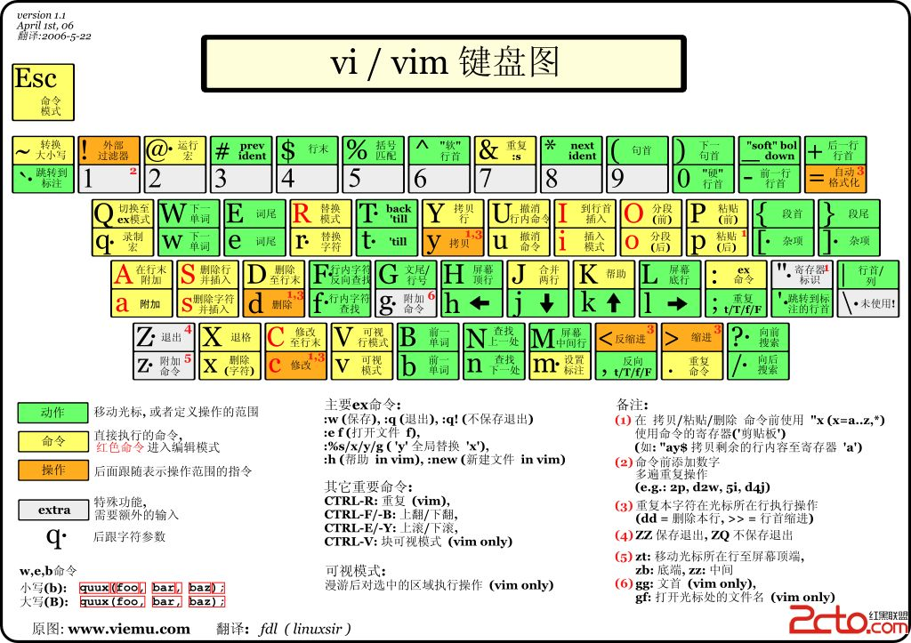

Introduction
To be a person who work at ease, love your job, love your living and continue learning.
- 歲月隨心，一切淡然
- DO NOT forget who you are and remember who you are.
- Theory guides the practice, and technology changes the world.
- 凭什么和为什么理论
- programmer thought
- 4T or 4W
Tell your computer what she should do for you.
Tell your user what happened if they encountered an error.
Tell yourself what happened if an error occured.
Tell your code reader what you writed.
- 不喜欢工作的原因之一就是无法做到开发自由，而必须工作的原因之一就是无法做到财务自由。
- We are all in a team.
Operating System
Network
Data Structure
Algorithm
get greatest common divisor(GCD) by Euclidean algorithm
#!/usr/bin/env python3
# -*- coding: utf-8 -*-
"""
Author: Turing<qishiwenjun@163.com>
Date: 2018-07-01 09:37
Desc: 辗转相除法求最大公因式
最小公倍数: 两个数的积除以最大公因式就得到最小公倍数
GCD;the greatest common divisor
"""
def gcd(num1, num2):
(_max, _min) = (max(num1, num2), min(num1, num2))
if _min == 0:
return _max
r = _max % _min
return gcd(_min, r)
def lcm(num1, num2):
if num1 == 0 or 0 == num2:
return 0
return num1 * num2 / gcd(num2, num1)
print(gcd(60, 40))
Database
- redis - key-value & cache based memory
- mysql - relational dbms
- mongodb - document stores
- influxdb - time series dbms
- ...
redis - key-value & cache based memory
mysql - relational dbms
mongodb - document stores
influxdb - time series dbms
Programming Language
Python
python module PYTHONPATH
sys.path
requirements.txt in python
what is the purpose of the requirements.txt's exists?
“Requirements files” are files containing a list of items to be installed using pip install like so:
pip install -r requirements.txt
Requirements files are used to force pip to properly resolve dependencies.
how to generate requirements.txt?
Requirements files are used to hold the result from pip freeze for the purpose of achieving repeatable installations. In this case, your requirement file contains a pinned version of everything that was installed when pip freeze was run.
pip freeze > requirements.txt
pip freeze
Output installed packages in requirements format. packages are listed in a case-insensitive sorted order.
Usage:
pip3.6 freeze [options]
Description:
Output installed packages in requirements format.
packages are listed in a case-insensitive sorted order.
Freeze Options:
-r, --requirement <file> Use the order in the given requirements file and
its comments when generating output. This option
can be used multiple times.
-f, --find-links <url> URL for finding packages, which will be added to
the output.
-l, --local If in a virtualenv that has global access, do
not output globally-installed packages.
--user Only output packages installed in user-site.
--all Do not skip these packages in the output: pip,
setuptools, wheel, distribute
--exclude-editable Exclude editable package from output.
General Options:
--isolated Run pip in an isolated mode, ignoring
environment variables and user configuration.
-v, --verbose Give more output. Option is additive, and can be
used up to 3 times.
-q, --quiet Give less output. Option is additive, and can be
used up to 3 times (corresponding to WARNING,
ERROR, and CRITICAL logging levels).
--log <path> Path to a verbose appending log.
--proxy <proxy> Specify a proxy in the form
[user:passwd@]proxy.server:port.
--retries <retries> Maximum number of retries each connection should
attempt (default 5 times).
--timeout <sec> Set the socket timeout (default 15 seconds).
--exists-action <action> Default action when a path already exists:
(s)witch, (i)gnore, (w)ipe, (b)ackup, (a)bort.
--trusted-host <hostname> Mark this host as trusted, even though it does
not have valid or any HTTPS.
--cert <path> Path to alternate CA bundle.
--client-cert <path> Path to SSL client certificate, a single file
containing the private key and the certificate
in PEM format.
--cache-dir <dir> Store the cache data in <dir>.
--no-cache-dir Disable the cache.
--disable-pip-version-check
Don't periodically check PyPI to determine
whether a new version of pip is available for
download. Implied with --no-index.
--no-color Suppress colored output
how to use requirementst.txt?
pip install -r requirements.txt
other: pyvenv
The venv module provides support for creating lightweight “virtual environments” with their own site directories, optionally isolated from system site directories. Each virtual environment has its own Python binary (which matches the version of the binary that was used to create this environment) and can have its own independent set of installed Python packages in its site directories.
pyvenv ENV_DIR
golang
Question or TODO List
- Question: how to define belong to and association relationship in gorm?
- TODO: golang memory management model.
golang time pacakge
GO Awesome
Web Framework
- gin-gonic/gin -
star 30444|fork 3509|issue 0 open 205 closed 0|PR 0|Commit 0 - labstack/echo -
star 14818|fork 1353|issue 0 open 30 closed 0|PR 0|Commit 0 - astaxie/beego -
star 21613|fork 4380|issue 0 open 699 closed 0|PR 0|Commit 0
ORM
- jinzhu/gorm -
star 14870|fork 1689|issue 0 open 471 closed 0|PR 0|Commit 0
Validation
- go-playground/validator -
star 3583|fork 320|issue 0 open 57 closed 0|PR 0|Commit 0 - asaskevich/govalidator -
star 3574|fork 363|issue 0 open 99 closed 0|PR 0|Commit 0
Other
- dgrijalva/jwt-go -
star 6093|fork 574|issue 0 open 71 closed 0|PR 0|Commit 0 - ugorji/go -
star 1241|fork 190|issue 0 open 3 closed 0|PR 0|Commit 0 - secure
Rust
shell command
https://linux.die.net/man/
GIT
git commit specification
All commit message lines will be cropped at 100 characters.
Reference: cz-cli
Specification
feat: A new featurefix: A bug fixdocs: Documentation only changesstyle: Changes that do not affect the meaning of the code(white-space, formatting, missing semi-colons, string value, etc)refactor: A code change that neither fixes a bug or adds a featureperf: A code change that imporves performancetest: Adding missing testschore: Changes to the build process or auxiliary tools and libraries such as documentation generation
Example
[fix] a bug fix
fix:a bug fix
git hooks
format golang code before commit
the following code auto format go source code.
#!/bin/bash
source ~/.bash_profile
# get changed go files
# https://git-scm.com/docs/git-diff#Documentation/git-diff.txt---diff-filterACDMRTUXB82308203
# Add Copy Modify
gofiles=$(git diff --cached --name-only --diff-filter=ACM | grep '.go$')
[ -z "$gofiles" ] && exit 0
# get unformatted go files
unformatted=$(gofmt -l $gofiles)
[ -z "$unformatted" ] && exit 0
# format go files and auto add to cache
for fn in $unformatted;do
echo "format file: ${fn}"
gofmt -w "${PWD}/${fn}"
[[ $? -ne 0 ]] && exit 1
git add ${fn}
done
git rebase: merge commits
- git rebase -i HEAD~2
- select Strategy
- git push origin branch-name --force
pick c586193 [fix] fix bug 1
pick 48dbe49 [feat] add new feature
# Rebase 96bbce5..48dbe49 onto 96bbce5 (2 commands)
#
# Commands:
# p, pick = use commit
# r, reword = use commit, but edit the commit message
# e, edit = use commit, but stop for amending
# s, squash = use commit, but meld into previous commit
# f, fixup = like "squash", but discard this commit's log message
# x, exec = run command (the rest of the line) using shell
# d, drop = remove commit
#
# These lines can be re-ordered; they are executed from top to bottom.
#
# If you remove a line here THAT COMMIT WILL BE LOST.
#
# However, if you remove everything, the rebase will be aborted.
#
# Note that empty commits are commented out
other option
- abort: git rebase --abort
Syncing a fork
Sync a fork of repository to keep it up-to-date with the upstream repository
reference: Syncing a fork
- we assume you a in the path of you fork's project.
- configuring-a-remote-for-a-fork
- syncing-a-fork
Devops
- API Documention Specification & What problems should be considered for your readers when write an api documention?
- Code Clean Note
What Problems should API Documention consider？
Author: Turing Zhu
Date: 2019-06-14 12:05:12
Description: API Document Specification
Method
- GET
- POST
- PUT
- DELETE
- HEAD
- PATCH
URI
Please reference restcookbook.com
Parameter
| name | data type | comment | required | default |
|---|---|---|---|---|
Response
SUCCESS
Failed 1
Failed 2
...
Note
- all data store in "data" field.
- "error" field tell user error type(parameter,network,database...)
- "message" field tell user error Detail information.
- if request failed, "data" field should set to null.
- "code" field specifed an error. "code","error","message" defiend in error packages. divieded with common error, project common error and specific error.
- you should provide at least one success and one error example for your api documention reader.
- all fields in request parameter && uri should be lower case and '_'.
Example
Get Users
GET /api/v1/users
Paramaters
| name | data type | comment | required | default |
|---|---|---|---|---|
| page | int | page | no | 1 |
| page_size | int | page size | no | 20 |
| sort_by | string | sort by specified field | no | id |
Response
SUCCESS
{
"code": 0,
"message": "success",
"error": "success",
"data": [],
"page": 1,
"page_size": 20
"total": 100
}
ERROR: Parameter Error
{
"code": 5001,
"message": "invalid parameter: parameter page should be an unsingned integer and littler"
"error": "parameter error",
"data": null,
}
ERROR: Network
{
}
ERROR: Database
{
}
ERROR: Logic
{
}
ERROR: ...
Code Clean & Code Style
Naming
- 名副其实，如果有更好的名称，则替换掉旧的
- 避免与系统变量重名或其他常用名字中
- 使用能读的出来的名字
- 不要使用前缀
- 明确是王道，专业程序眼善用其能，编写其他人能理解的代码
- 类名、对象名应该是名词或名词短语
- 不要出现实际具体值，如1 0 等，用常量名代替，不然看到1完全不理解什么意思
- 方法名和函数名应该是动词或动词短语
- 言道意到，意到言道
- add insert append的区别，另外create
- 只要短名称足够精确，就不要使用长名称
- 驼峰式命名 & 蛇形命名
Specipitation
| item | specipitation | comment |
|---|---|---|
| file & directory | snake | |
| URL | snake | |
| database | snake | |
| table | snake | |
| field | snake | json and table in database |
| constant | all uppercase with '_' | |
| variable | hump in go, snake in python | lower first letter, hump or snake |
| class | hump | upper first letter |
| method & function | hump in go, snake in python | lower first letter |
| instance | hump in go, snake in python | lower first letter, humpp or snake |
Function
- 函数尽量短小
- if else while for 等语句缩进上不多于1层或2层
- 整体缩进能短则短
- 函数应该只做一件事，做好一件事，只做这一件事，判断是否只做一件事的标准是：看是否还能拆分出一个函数来
- 单一权责原则 Single Resonsibility Principle
- 开放闭合原则：Open Closed Priciple
- 函数参数：优先零参数，其次单一参数，其次双参数，尽量避免三个及三个以上的参数
- 参数多了的问题：1从函数名推断功能，从返回值和返回类型理解函数输出，从参数列表依次看参数名，参数类型，并理解其作用和怎么用
- 有些参数2-3个参数刚刚好，比如笛卡儿点，坐标点等
- 如果出现三个或三个以上的参数，请考虑封装成结构体
- 单一参数函数：建议形成 v+n 的形式
- 错误码集中问题：其他地方都得导入和使用它，当ERROR枚举修改时，所有其他类都必须重新编译和部署，这对ERROR类造成一定压力，导致程序员不愿意增加新的错误码而继续使用旧的错误码而导致无法区分错误，建议错误名+错误消息形式，错误码是否有必要？
- 消灭重复性的代码
Comment
The best comment in code is no comment.
Class Format
the order of class member in a class defination
- public static constant
- private static constant
- private instance variable
- pulic method
- private method called by public method(followed by corresponding public method)
Test
- unit test: how to write and how to write better unit test?
- api tet
- integrated test
- function test
- users' experience test
- test framework: robot framework
- test apllication: jira
Linux && Shell
vim
~/.vimrc
vim command line arguments in shell
-o[N] Open N windows (default: one for each file)
-O[N] Like -o but split vertically
+<lnum> Start at line <lnum>
+ Start at end of file
-h or --help Print Help (this message) and exit
--version Print version information and exit
vim shortcut in vim terminal
Searching
Inserting
- A: 在当前行尾进入编辑状态
- I: 在当前行首进入编辑状态
- i: 在当前光标之前进入编辑状态
- a: 在当前光标之后进入编辑状态
- o: 在下一行行首进入编辑状态
- O: 在上一行行首进入编辑状态
Replacing
- 合并行:
:r1,r2jexample::1,12j - 合并2行: J命令 将当前行与下一行合并
- 单个字母替换: r+替换字母
Selecting
Copying
Pasting
Deleting
Paging
- A 当前行尾进入编辑状态, 另见 a,I,i,O,o
- a 当前光标之后进入编辑状态, 另见 A,I,i,O,o
- B 将当前光标移动到上一个段落句首首, 另见 b
- b 将当前光标移动到上一个单词词首, 另见 B
- C
- c
- D 删除光标到行尾的所有字符
- d
- E
- e
- F
- f
- G 跳转到最后一行第一列
- g
- H 跳转到本页第一行
- h 光标前移一个字母, 另见 j k l
- I 当前行首进入编辑状态, 另见 A, a,i, O, o
- i 当前光标之前进入编辑状态, 另见 a, A, I, o, O
- J
- j 光标移动到下一行, 另见 h k l
- K
- k 光标移动到上一行, 另见 h k l
- L
- l 光标后移一个字母 另见 h j k
- M
- m
- N
- n
- O 在上一行行首进入编辑状态
- o 在下一行行首进入编辑状态
- P
- p
- Q
- q
- R
- r 替换当前光标处字母
- S
- s
- T
- t
- u
- v
- V
- W 跳转到下一句句首
- w 跳转到下一个单词词首
- X 删除光标前面一个字符, 回退删除
- x 删除当前字符,
- Y
- y
- Z
- z
- gg 回到第一行第一列
- dd 删除一行
vim command in vim terminal
- format json data: :%!python -m json.tool
vim plugin
Appendix
vim --help
VIM - Vi IMproved 8.0 (2016 Sep 12, compiled Nov 29 2017 18:37:46)
usage: vim [arguments] [file ..] edit specified file(s)
or: vim [arguments] - read text from stdin
or: vim [arguments] -t tag edit file where tag is defined
or: vim [arguments] -q [errorfile] edit file with first error
Arguments:
-- Only file names after this
-v Vi mode (like "vi")
-e Ex mode (like "ex")
-E Improved Ex mode
-s Silent (batch) mode (only for "ex")
-d Diff mode (like "vimdiff")
-y Easy mode (like "evim", modeless)
-R Readonly mode (like "view")
-Z Restricted mode (like "rvim")
-m Modifications (writing files) not allowed
-M Modifications in text not allowed
-b Binary mode
-l Lisp mode
-C Compatible with Vi: 'compatible'
-N Not fully Vi compatible: 'nocompatible'
-V[N][fname] Be verbose [level N] [log messages to fname]
-D Debugging mode
-n No swap file, use memory only
-r List swap files and exit
-r (with file name) Recover crashed session
-L Same as -r
-T <terminal> Set terminal type to <terminal>
--not-a-term Skip warning for input/output not being a terminal
--ttyfail Exit if input or output is not a terminal
-u <vimrc> Use <vimrc> instead of any .vimrc
--noplugin Don't load plugin scripts
-p[N] Open N tab pages (default: one for each file)
-o[N] Open N windows (default: one for each file)
-O[N] Like -o but split vertically
+ Start at end of file
+<lnum> Start at line <lnum>
--cmd <command> Execute <command> before loading any vimrc file
-c <command> Execute <command> after loading the first file
-S <session> Source file <session> after loading the first file
-s <scriptin> Read Normal mode commands from file <scriptin>
-w <scriptout> Append all typed commands to file <scriptout>
-W <scriptout> Write all typed commands to file <scriptout>
-x Edit encrypted files
--startuptime <file> Write startup timing messages to <file>
-i <viminfo> Use <viminfo> instead of .viminfo
--clean 'nocompatible', Vim defaults, no plugins, no viminfo
-h or --help Print Help (this message) and exit
--version Print version information and exit

How a hello_world program is build out?
note:
linux version:
CentOS Linux release 7.4.1708 (Core)gcc version:
gcc (GCC) 4.8.5 20150623 (Red Hat 4.8.5-36)
source code in C
hello_world.c file
#include<stdio.h>
int main(int argc,char *argv[]) {
printf("Hello World!");
return 0 ;
}
preprocessor
The main purpose of preprocessor is processing the command begin with # except #pragma. For the above hello_world.c program, after preprocess, it will insert stdio.h's content to the location of the preprocessor command: #include<stdio.h>
the command of generating content after preprocessor is:
# -E Only run the preprocessor
gcc -E -o hello_world.i helloWorld.c
And the hello_world.i content is:
# 1 "hello_world.c"
# 1 "<built-in>"
# 1 "<command-line>"
# 1 "/usr/include/stdc-predef.h" 1 3 4
# 1 "<command-line>" 2
# 1 "hello_world.c"
# 1 "/usr/include/stdio.h" 1 3 4
# 27 "/usr/include/stdio.h" 3 4
# 1 "/usr/include/features.h" 1 3 4
# 375 "/usr/include/features.h" 3 4
# 1 "/usr/include/sys/cdefs.h" 1 3 4
# 392 "/usr/include/sys/cdefs.h" 3 4
# 1 "/usr/include/bits/wordsize.h" 1 3 4
# 393 "/usr/include/sys/cdefs.h" 2 3 4
# 376 "/usr/include/features.h" 2 3 4
# 399 "/usr/include/features.h" 3 4
# 1 "/usr/include/gnu/stubs.h" 1 3 4
# 10 "/usr/include/gnu/stubs.h" 3 4
# 1 "/usr/include/gnu/stubs-64.h" 1 3 4
# 11 "/usr/include/gnu/stubs.h" 2 3 4
# 400 "/usr/include/features.h" 2 3 4
# 28 "/usr/include/stdio.h" 2 3 4
# 1 "/usr/lib/gcc/x86_64-redhat-linux/4.8.5/include/stddef.h" 1 3 4
# 212 "/usr/lib/gcc/x86_64-redhat-linux/4.8.5/include/stddef.h" 3 4
typedef long unsigned int size_t;
# 34 "/usr/include/stdio.h" 2 3 4
# 1 "/usr/include/bits/types.h" 1 3 4
# 27 "/usr/include/bits/types.h" 3 4
# 1 "/usr/include/bits/wordsize.h" 1 3 4
# 28 "/usr/include/bits/types.h" 2 3 4
typedef unsigned char __u_char;
typedef unsigned short int __u_short;
typedef unsigned int __u_int;
typedef unsigned long int __u_long;
typedef signed char __int8_t;
typedef unsigned char __uint8_t;
typedef signed short int __int16_t;
typedef unsigned short int __uint16_t;
typedef signed int __int32_t;
typedef unsigned int __uint32_t;
typedef signed long int __int64_t;
typedef unsigned long int __uint64_t;
typedef long int __quad_t;
typedef unsigned long int __u_quad_t;
# 130 "/usr/include/bits/types.h" 3 4
# 1 "/usr/include/bits/typesizes.h" 1 3 4
# 131 "/usr/include/bits/types.h" 2 3 4
typedef unsigned long int __dev_t;
typedef unsigned int __uid_t;
typedef unsigned int __gid_t;
typedef unsigned long int __ino_t;
typedef unsigned long int __ino64_t;
typedef unsigned int __mode_t;
typedef unsigned long int __nlink_t;
typedef long int __off_t;
typedef long int __off64_t;
typedef int __pid_t;
typedef struct { int __val[2]; } __fsid_t;
typedef long int __clock_t;
typedef unsigned long int __rlim_t;
typedef unsigned long int __rlim64_t;
typedef unsigned int __id_t;
typedef long int __time_t;
typedef unsigned int __useconds_t;
typedef long int __suseconds_t;
typedef int __daddr_t;
typedef int __key_t;
typedef int __clockid_t;
typedef void * __timer_t;
typedef long int __blksize_t;
typedef long int __blkcnt_t;
typedef long int __blkcnt64_t;
typedef unsigned long int __fsblkcnt_t;
typedef unsigned long int __fsblkcnt64_t;
typedef unsigned long int __fsfilcnt_t;
typedef unsigned long int __fsfilcnt64_t;
typedef long int __fsword_t;
typedef long int __ssize_t;
typedef long int __syscall_slong_t;
typedef unsigned long int __syscall_ulong_t;
typedef __off64_t __loff_t;
typedef __quad_t *__qaddr_t;
typedef char *__caddr_t;
typedef long int __intptr_t;
typedef unsigned int __socklen_t;
# 36 "/usr/include/stdio.h" 2 3 4
# 44 "/usr/include/stdio.h" 3 4
struct _IO_FILE;
typedef struct _IO_FILE FILE;
# 64 "/usr/include/stdio.h" 3 4
typedef struct _IO_FILE __FILE;
# 74 "/usr/include/stdio.h" 3 4
# 1 "/usr/include/libio.h" 1 3 4
# 32 "/usr/include/libio.h" 3 4
# 1 "/usr/include/_G_config.h" 1 3 4
# 15 "/usr/include/_G_config.h" 3 4
# 1 "/usr/lib/gcc/x86_64-redhat-linux/4.8.5/include/stddef.h" 1 3 4
# 16 "/usr/include/_G_config.h" 2 3 4
# 1 "/usr/include/wchar.h" 1 3 4
# 82 "/usr/include/wchar.h" 3 4
typedef struct
{
int __count;
union
{
unsigned int __wch;
char __wchb[4];
} __value;
} __mbstate_t;
# 21 "/usr/include/_G_config.h" 2 3 4
typedef struct
{
__off_t __pos;
__mbstate_t __state;
} _G_fpos_t;
typedef struct
{
__off64_t __pos;
__mbstate_t __state;
} _G_fpos64_t;
# 33 "/usr/include/libio.h" 2 3 4
# 50 "/usr/include/libio.h" 3 4
# 1 "/usr/lib/gcc/x86_64-redhat-linux/4.8.5/include/stdarg.h" 1 3 4
# 40 "/usr/lib/gcc/x86_64-redhat-linux/4.8.5/include/stdarg.h" 3 4
typedef __builtin_va_list __gnuc_va_list;
# 51 "/usr/include/libio.h" 2 3 4
# 145 "/usr/include/libio.h" 3 4
struct _IO_jump_t; struct _IO_FILE;
# 155 "/usr/include/libio.h" 3 4
typedef void _IO_lock_t;
struct _IO_marker {
struct _IO_marker *_next;
struct _IO_FILE *_sbuf;
int _pos;
# 178 "/usr/include/libio.h" 3 4
};
enum __codecvt_result
{
__codecvt_ok,
__codecvt_partial,
__codecvt_error,
__codecvt_noconv
};
# 246 "/usr/include/libio.h" 3 4
struct _IO_FILE {
int _flags;
char* _IO_read_ptr;
char* _IO_read_end;
char* _IO_read_base;
char* _IO_write_base;
char* _IO_write_ptr;
char* _IO_write_end;
char* _IO_buf_base;
char* _IO_buf_end;
char *_IO_save_base;
char *_IO_backup_base;
char *_IO_save_end;
struct _IO_marker *_markers;
struct _IO_FILE *_chain;
int _fileno;
int _flags2;
__off_t _old_offset;
unsigned short _cur_column;
signed char _vtable_offset;
char _shortbuf[1];
_IO_lock_t *_lock;
# 294 "/usr/include/libio.h" 3 4
__off64_t _offset;
# 303 "/usr/include/libio.h" 3 4
void *__pad1;
void *__pad2;
void *__pad3;
void *__pad4;
size_t __pad5;
int _mode;
char _unused2[15 * sizeof (int) - 4 * sizeof (void *) - sizeof (size_t)];
};
typedef struct _IO_FILE _IO_FILE;
struct _IO_FILE_plus;
extern struct _IO_FILE_plus _IO_2_1_stdin_;
extern struct _IO_FILE_plus _IO_2_1_stdout_;
extern struct _IO_FILE_plus _IO_2_1_stderr_;
# 339 "/usr/include/libio.h" 3 4
typedef __ssize_t __io_read_fn (void *__cookie, char *__buf, size_t __nbytes);
typedef __ssize_t __io_write_fn (void *__cookie, const char *__buf,
size_t __n);
typedef int __io_seek_fn (void *__cookie, __off64_t *__pos, int __w);
typedef int __io_close_fn (void *__cookie);
# 391 "/usr/include/libio.h" 3 4
extern int __underflow (_IO_FILE *);
extern int __uflow (_IO_FILE *);
extern int __overflow (_IO_FILE *, int);
# 435 "/usr/include/libio.h" 3 4
extern int _IO_getc (_IO_FILE *__fp);
extern int _IO_putc (int __c, _IO_FILE *__fp);
extern int _IO_feof (_IO_FILE *__fp) __attribute__ ((__nothrow__ , __leaf__));
extern int _IO_ferror (_IO_FILE *__fp) __attribute__ ((__nothrow__ , __leaf__));
extern int _IO_peekc_locked (_IO_FILE *__fp);
extern void _IO_flockfile (_IO_FILE *) __attribute__ ((__nothrow__ , __leaf__));
extern void _IO_funlockfile (_IO_FILE *) __attribute__ ((__nothrow__ , __leaf__));
extern int _IO_ftrylockfile (_IO_FILE *) __attribute__ ((__nothrow__ , __leaf__));
# 465 "/usr/include/libio.h" 3 4
extern int _IO_vfscanf (_IO_FILE * __restrict, const char * __restrict,
__gnuc_va_list, int *__restrict);
extern int _IO_vfprintf (_IO_FILE *__restrict, const char *__restrict,
__gnuc_va_list);
extern __ssize_t _IO_padn (_IO_FILE *, int, __ssize_t);
extern size_t _IO_sgetn (_IO_FILE *, void *, size_t);
extern __off64_t _IO_seekoff (_IO_FILE *, __off64_t, int, int);
extern __off64_t _IO_seekpos (_IO_FILE *, __off64_t, int);
extern void _IO_free_backup_area (_IO_FILE *) __attribute__ ((__nothrow__ , __leaf__));
# 75 "/usr/include/stdio.h" 2 3 4
typedef __gnuc_va_list va_list;
# 90 "/usr/include/stdio.h" 3 4
typedef __off_t off_t;
# 102 "/usr/include/stdio.h" 3 4
typedef __ssize_t ssize_t;
typedef _G_fpos_t fpos_t;
# 164 "/usr/include/stdio.h" 3 4
# 1 "/usr/include/bits/stdio_lim.h" 1 3 4
# 165 "/usr/include/stdio.h" 2 3 4
extern struct _IO_FILE *stdin;
extern struct _IO_FILE *stdout;
extern struct _IO_FILE *stderr;
extern int remove (const char *__filename) __attribute__ ((__nothrow__ , __leaf__));
extern int rename (const char *__old, const char *__new) __attribute__ ((__nothrow__ , __leaf__));
extern int renameat (int __oldfd, const char *__old, int __newfd,
const char *__new) __attribute__ ((__nothrow__ , __leaf__));
extern FILE *tmpfile (void) ;
# 209 "/usr/include/stdio.h" 3 4
extern char *tmpnam (char *__s) __attribute__ ((__nothrow__ , __leaf__)) ;
extern char *tmpnam_r (char *__s) __attribute__ ((__nothrow__ , __leaf__)) ;
# 227 "/usr/include/stdio.h" 3 4
extern char *tempnam (const char *__dir, const char *__pfx)
__attribute__ ((__nothrow__ , __leaf__)) __attribute__ ((__malloc__)) ;
extern int fclose (FILE *__stream);
extern int fflush (FILE *__stream);
# 252 "/usr/include/stdio.h" 3 4
extern int fflush_unlocked (FILE *__stream);
# 266 "/usr/include/stdio.h" 3 4
extern FILE *fopen (const char *__restrict __filename,
const char *__restrict __modes) ;
extern FILE *freopen (const char *__restrict __filename,
const char *__restrict __modes,
FILE *__restrict __stream) ;
# 295 "/usr/include/stdio.h" 3 4
# 306 "/usr/include/stdio.h" 3 4
extern FILE *fdopen (int __fd, const char *__modes) __attribute__ ((__nothrow__ , __leaf__)) ;
# 319 "/usr/include/stdio.h" 3 4
extern FILE *fmemopen (void *__s, size_t __len, const char *__modes)
__attribute__ ((__nothrow__ , __leaf__)) ;
extern FILE *open_memstream (char **__bufloc, size_t *__sizeloc) __attribute__ ((__nothrow__ , __leaf__)) ;
extern void setbuf (FILE *__restrict __stream, char *__restrict __buf) __attribute__ ((__nothrow__ , __leaf__));
extern int setvbuf (FILE *__restrict __stream, char *__restrict __buf,
int __modes, size_t __n) __attribute__ ((__nothrow__ , __leaf__));
extern void setbuffer (FILE *__restrict __stream, char *__restrict __buf,
size_t __size) __attribute__ ((__nothrow__ , __leaf__));
extern void setlinebuf (FILE *__stream) __attribute__ ((__nothrow__ , __leaf__));
extern int fprintf (FILE *__restrict __stream,
const char *__restrict __format, ...);
extern int printf (const char *__restrict __format, ...);
extern int sprintf (char *__restrict __s,
const char *__restrict __format, ...) __attribute__ ((__nothrow__));
extern int vfprintf (FILE *__restrict __s, const char *__restrict __format,
__gnuc_va_list __arg);
extern int vprintf (const char *__restrict __format, __gnuc_va_list __arg);
extern int vsprintf (char *__restrict __s, const char *__restrict __format,
__gnuc_va_list __arg) __attribute__ ((__nothrow__));
extern int snprintf (char *__restrict __s, size_t __maxlen,
const char *__restrict __format, ...)
__attribute__ ((__nothrow__)) __attribute__ ((__format__ (__printf__, 3, 4)));
extern int vsnprintf (char *__restrict __s, size_t __maxlen,
const char *__restrict __format, __gnuc_va_list __arg)
__attribute__ ((__nothrow__)) __attribute__ ((__format__ (__printf__, 3, 0)));
# 412 "/usr/include/stdio.h" 3 4
extern int vdprintf (int __fd, const char *__restrict __fmt,
__gnuc_va_list __arg)
__attribute__ ((__format__ (__printf__, 2, 0)));
extern int dprintf (int __fd, const char *__restrict __fmt, ...)
__attribute__ ((__format__ (__printf__, 2, 3)));
extern int fscanf (FILE *__restrict __stream,
const char *__restrict __format, ...) ;
extern int scanf (const char *__restrict __format, ...) ;
extern int sscanf (const char *__restrict __s,
const char *__restrict __format, ...) __attribute__ ((__nothrow__ , __leaf__));
# 443 "/usr/include/stdio.h" 3 4
extern int fscanf (FILE *__restrict __stream, const char *__restrict __format, ...) __asm__ ("" "__isoc99_fscanf")
;
extern int scanf (const char *__restrict __format, ...) __asm__ ("" "__isoc99_scanf")
;
extern int sscanf (const char *__restrict __s, const char *__restrict __format, ...) __asm__ ("" "__isoc99_sscanf") __attribute__ ((__nothrow__ , __leaf__))
;
# 463 "/usr/include/stdio.h" 3 4
extern int vfscanf (FILE *__restrict __s, const char *__restrict __format,
__gnuc_va_list __arg)
__attribute__ ((__format__ (__scanf__, 2, 0))) ;
extern int vscanf (const char *__restrict __format, __gnuc_va_list __arg)
__attribute__ ((__format__ (__scanf__, 1, 0))) ;
extern int vsscanf (const char *__restrict __s,
const char *__restrict __format, __gnuc_va_list __arg)
__attribute__ ((__nothrow__ , __leaf__)) __attribute__ ((__format__ (__scanf__, 2, 0)));
# 494 "/usr/include/stdio.h" 3 4
extern int vfscanf (FILE *__restrict __s, const char *__restrict __format, __gnuc_va_list __arg) __asm__ ("" "__isoc99_vfscanf")
__attribute__ ((__format__ (__scanf__, 2, 0))) ;
extern int vscanf (const char *__restrict __format, __gnuc_va_list __arg) __asm__ ("" "__isoc99_vscanf")
__attribute__ ((__format__ (__scanf__, 1, 0))) ;
extern int vsscanf (const char *__restrict __s, const char *__restrict __format, __gnuc_va_list __arg) __asm__ ("" "__isoc99_vsscanf") __attribute__ ((__nothrow__ , __leaf__))
__attribute__ ((__format__ (__scanf__, 2, 0)));
# 522 "/usr/include/stdio.h" 3 4
extern int fgetc (FILE *__stream);
extern int getc (FILE *__stream);
extern int getchar (void);
# 550 "/usr/include/stdio.h" 3 4
extern int getc_unlocked (FILE *__stream);
extern int getchar_unlocked (void);
# 561 "/usr/include/stdio.h" 3 4
extern int fgetc_unlocked (FILE *__stream);
extern int fputc (int __c, FILE *__stream);
extern int putc (int __c, FILE *__stream);
extern int putchar (int __c);
# 594 "/usr/include/stdio.h" 3 4
extern int fputc_unlocked (int __c, FILE *__stream);
extern int putc_unlocked (int __c, FILE *__stream);
extern int putchar_unlocked (int __c);
extern int getw (FILE *__stream);
extern int putw (int __w, FILE *__stream);
extern char *fgets (char *__restrict __s, int __n, FILE *__restrict __stream)
;
# 638 "/usr/include/stdio.h" 3 4
extern char *gets (char *__s) __attribute__ ((__deprecated__));
# 665 "/usr/include/stdio.h" 3 4
extern __ssize_t __getdelim (char **__restrict __lineptr,
size_t *__restrict __n, int __delimiter,
FILE *__restrict __stream) ;
extern __ssize_t getdelim (char **__restrict __lineptr,
size_t *__restrict __n, int __delimiter,
FILE *__restrict __stream) ;
extern __ssize_t getline (char **__restrict __lineptr,
size_t *__restrict __n,
FILE *__restrict __stream) ;
extern int fputs (const char *__restrict __s, FILE *__restrict __stream);
extern int puts (const char *__s);
extern int ungetc (int __c, FILE *__stream);
extern size_t fread (void *__restrict __ptr, size_t __size,
size_t __n, FILE *__restrict __stream) ;
extern size_t fwrite (const void *__restrict __ptr, size_t __size,
size_t __n, FILE *__restrict __s);
# 737 "/usr/include/stdio.h" 3 4
extern size_t fread_unlocked (void *__restrict __ptr, size_t __size,
size_t __n, FILE *__restrict __stream) ;
extern size_t fwrite_unlocked (const void *__restrict __ptr, size_t __size,
size_t __n, FILE *__restrict __stream);
extern int fseek (FILE *__stream, long int __off, int __whence);
extern long int ftell (FILE *__stream) ;
extern void rewind (FILE *__stream);
# 773 "/usr/include/stdio.h" 3 4
extern int fseeko (FILE *__stream, __off_t __off, int __whence);
extern __off_t ftello (FILE *__stream) ;
# 792 "/usr/include/stdio.h" 3 4
extern int fgetpos (FILE *__restrict __stream, fpos_t *__restrict __pos);
extern int fsetpos (FILE *__stream, const fpos_t *__pos);
# 815 "/usr/include/stdio.h" 3 4
# 824 "/usr/include/stdio.h" 3 4
extern void clearerr (FILE *__stream) __attribute__ ((__nothrow__ , __leaf__));
extern int feof (FILE *__stream) __attribute__ ((__nothrow__ , __leaf__)) ;
extern int ferror (FILE *__stream) __attribute__ ((__nothrow__ , __leaf__)) ;
extern void clearerr_unlocked (FILE *__stream) __attribute__ ((__nothrow__ , __leaf__));
extern int feof_unlocked (FILE *__stream) __attribute__ ((__nothrow__ , __leaf__)) ;
extern int ferror_unlocked (FILE *__stream) __attribute__ ((__nothrow__ , __leaf__)) ;
extern void perror (const char *__s);
# 1 "/usr/include/bits/sys_errlist.h" 1 3 4
# 26 "/usr/include/bits/sys_errlist.h" 3 4
extern int sys_nerr;
extern const char *const sys_errlist[];
# 854 "/usr/include/stdio.h" 2 3 4
extern int fileno (FILE *__stream) __attribute__ ((__nothrow__ , __leaf__)) ;
extern int fileno_unlocked (FILE *__stream) __attribute__ ((__nothrow__ , __leaf__)) ;
# 873 "/usr/include/stdio.h" 3 4
extern FILE *popen (const char *__command, const char *__modes) ;
extern int pclose (FILE *__stream);
extern char *ctermid (char *__s) __attribute__ ((__nothrow__ , __leaf__));
# 913 "/usr/include/stdio.h" 3 4
extern void flockfile (FILE *__stream) __attribute__ ((__nothrow__ , __leaf__));
extern int ftrylockfile (FILE *__stream) __attribute__ ((__nothrow__ , __leaf__)) ;
extern void funlockfile (FILE *__stream) __attribute__ ((__nothrow__ , __leaf__));
# 943 "/usr/include/stdio.h" 3 4
# 2 "hello_world.c" 2
int main(int argc,char *argv[]) {
printf("Hello World!");
return 0;
}
compilation
after preprocessor, we should process the object file with Lexical analysis, syntax analysis and semantic analysis and generate assemble file.
we can generate assemble file with the following command:
# -S Only run preprocess and compilation steps
gcc -S -o hello_world.s hello_world.c
the object assemble file content:
.file "hello_world.c"
.section .rodata
.LC0:
.string "Hello World!"
.text
.globl main
.type main, @function
main:
.LFB0:
.cfi_startproc
pushq %rbp
.cfi_def_cfa_offset 16
.cfi_offset 6, -16
movq %rsp, %rbp
.cfi_def_cfa_register 6
subq $16, %rsp
movl %edi, -4(%rbp)
movq %rsi, -16(%rbp)
movl $.LC0, %edi
movl $0, %eax
call printf
movl $0, %eax
leave
.cfi_def_cfa 7, 8
ret
.cfi_endproc
.LFE0:
.size main, .-main
.ident "GCC: (GNU) 4.8.5 20150623 (Red Hat 4.8.5-36)"
.section .note.GNU-stack,"",@progbits
assemble
assemble is the command of translating assemble code to machine code and generate object file.
we can use the following command tot get assembled content:
# -o <file> Write output to <file>
gcc -o helloWorld.o -c helloWorld.c
and the binary file with hexadecimal data:
00000000: 7f45 4c46 0201 0100 0000 0000 0000 0000 .ELF............
00000010: 0100 3e00 0100 0000 0000 0000 0000 0000 ..>.............
00000020: 0000 0000 0000 0000 3f02 0000 0000 0000 ........?.......
00000030: 0000 0000 4000 0000 0000 4000 0d00 0a00 ....@.....@.....
00000040: 5548 3f3f 483f 3f10 3f7d 3f48 3f75 3f3f UH??H??.?}?H?u??
00000050: 0000 0000 3f00 0000 003f 0000 0000 3f00 ....?....?....?.
00000060: 0000 003f 3f48 656c 6c6f 2057 6f72 6c64 ...??Hello World
00000070: 2100 0047 4343 3a20 2847 4e55 2920 342e !..GCC: (GNU) 4.
00000080: 382e 3520 3230 3135 3036 3233 2028 5265 8.5 20150623 (Re
00000090: 6420 4861 7420 342e 382e 352d 3336 2900 d Hat 4.8.5-36).
000000a0: 1400 0000 0000 0000 017a 5200 0178 1001 .........zR..x..
000000b0: 1b0c 0708 3f01 0000 1c00 0000 1c00 0000 ....?...........
000000c0: 0000 0000 2500 0000 0041 0e10 3f02 430d ....%....A..?.C.
000000d0: 0660 0c07 0800 0000 002e 7379 6d74 6162 .`........symtab
000000e0: 002e 7374 7274 6162 002e 7368 7374 7274 ..strtab..shstrt
000000f0: 6162 002e 7265 6c61 2e74 6578 7400 2e64 ab..rela.text..d
00000100: 6174 6100 2e62 7373 002e 726f 6461 7461 ata..bss..rodata
00000110: 002e 636f 6d6d 656e 7400 2e6e 6f74 652e ..comment..note.
00000120: 474e 552d 7374 6163 6b00 2e72 656c 612e GNU-stack..rela.
00000130: 6568 5f66 7261 6d65 0000 0000 0000 0000 eh_frame........
00000140: 0000 0000 0000 0000 0000 0000 0000 0000 ................
00000150: 0000 0000 0000 0000 0100 0000 0400 3f3f ..............??
00000160: 0000 0000 0000 0000 0000 0000 0000 0000 ................
00000170: 0000 0000 0300 0100 0000 0000 0000 0000 ................
00000180: 0000 0000 0000 0000 0000 0000 0300 0300 ................
00000190: 0000 0000 0000 0000 0000 0000 0000 0000 ................
000001a0: 0000 0000 0300 0400 0000 0000 0000 0000 ................
000001b0: 0000 0000 0000 0000 0000 0000 0300 0500 ................
000001c0: 0000 0000 0000 0000 0000 0000 0000 0000 ................
000001d0: 0000 0000 0300 0700 0000 0000 0000 0000 ................
000001e0: 0000 0000 0000 0000 0000 0000 0300 0800 ................
000001f0: 0000 0000 0000 0000 0000 0000 0000 0000 ................
00000200: 0000 0000 0300 0600 0000 0000 0000 0000 ................
00000210: 0000 0000 0000 0000 0f00 0000 1200 0100 ................
00000220: 0000 0000 0000 0000 2500 0000 0000 0000 ........%.......
00000230: 1400 0000 1000 0000 0000 0000 0000 0000 ................
00000240: 0000 0000 0000 0000 0068 656c 6c6f 5f77 .........hello_w
00000250: 6f72 6c64 2e63 006d 6169 6e00 7072 696e orld.c.main.prin
00000260: 7466 0000 0000 0000 1000 0000 0000 0000 tf..............
00000270: 0a00 0000 0500 0000 0000 0000 0000 0000 ................
00000280: 1a00 0000 0000 0000 0200 0000 0a00 0000 ................
00000290: 3f3f 3f3f 3f3f 3f3f 2000 0000 0000 0000 ???????? .......
000002a0: 0200 0000 0200 0000 0000 0000 0000 0000 ................
000002b0: 0000 0000 0000 0000 0000 0000 0000 0000 ................
000002c0: 0000 0000 0000 0000 0000 0000 0000 0000 ................
000002d0: 0000 0000 0000 0000 0000 0000 0000 0000 ................
000002e0: 0000 0000 0000 0000 0000 0000 0000 0000 ................
000002f0: 2000 0000 0100 0000 0600 0000 0000 0000 ...............
00000300: 0000 0000 0000 0000 4000 0000 0000 0000 ........@.......
00000310: 2500 0000 0000 0000 0000 0000 0000 0000 %...............
00000320: 0100 0000 0000 0000 0000 0000 0000 0000 ................
00000330: 1b00 0000 0400 0000 4000 0000 0000 0000 ........@.......
00000340: 0000 0000 0000 0000 6802 0000 0000 0000 ........h.......
00000350: 3000 0000 0000 0000 0b00 0000 0100 0000 0...............
00000360: 0800 0000 0000 0000 1800 0000 0000 0000 ................
00000370: 2600 0000 0100 0000 0300 0000 0000 0000 &...............
00000380: 0000 0000 0000 0000 6500 0000 0000 0000 ........e.......
00000390: 0000 0000 0000 0000 0000 0000 0000 0000 ................
000003a0: 0100 0000 0000 0000 0000 0000 0000 0000 ................
000003b0: 2c00 0000 0800 0000 0300 0000 0000 0000 ,...............
000003c0: 0000 0000 0000 0000 6500 0000 0000 0000 ........e.......
000003d0: 0000 0000 0000 0000 0000 0000 0000 0000 ................
000003e0: 0100 0000 0000 0000 0000 0000 0000 0000 ................
000003f0: 3100 0000 0100 0000 0200 0000 0000 0000 1...............
00000400: 0000 0000 0000 0000 6500 0000 0000 0000 ........e.......
00000410: 0d00 0000 0000 0000 0000 0000 0000 0000 ................
00000420: 0100 0000 0000 0000 0000 0000 0000 0000 ................
00000430: 3900 0000 0100 0000 3000 0000 0000 0000 9.......0.......
00000440: 0000 0000 0000 0000 7200 0000 0000 0000 ........r.......
00000450: 2e00 0000 0000 0000 0000 0000 0000 0000 ................
00000460: 0100 0000 0000 0000 0100 0000 0000 0000 ................
00000470: 4200 0000 0100 0000 0000 0000 0000 0000 B...............
00000480: 0000 0000 0000 0000 3f00 0000 0000 0000 ........?.......
00000490: 0000 0000 0000 0000 0000 0000 0000 0000 ................
000004a0: 0100 0000 0000 0000 0000 0000 0000 0000 ................
000004b0: 5700 0000 0100 0000 0200 0000 0000 0000 W...............
000004c0: 0000 0000 0000 0000 3f00 0000 0000 0000 ........?.......
000004d0: 3800 0000 0000 0000 0000 0000 0000 0000 8...............
000004e0: 0800 0000 0000 0000 0000 0000 0000 0000 ................
000004f0: 5200 0000 0400 0000 4000 0000 0000 0000 R.......@.......
00000500: 0000 0000 0000 0000 3f02 0000 0000 0000 ........?.......
00000510: 1800 0000 0000 0000 0b00 0000 0800 0000 ................
00000520: 0800 0000 0000 0000 1800 0000 0000 0000 ................
00000530: 1100 0000 0300 0000 0000 0000 0000 0000 ................
00000540: 0000 0000 0000 0000 3f00 0000 0000 0000 ........?.......
00000550: 6100 0000 0000 0000 0000 0000 0000 0000 a...............
00000560: 0100 0000 0000 0000 0000 0000 0000 0000 ................
00000570: 0100 0000 0200 0000 0000 0000 0000 0000 ................
00000580: 0000 0000 0000 0000 4001 0000 0000 0000 ........@.......
00000590: 0801 0000 0000 0000 0c00 0000 0900 0000 ................
000005a0: 0800 0000 0000 0000 1800 0000 0000 0000 ................
000005b0: 0900 0000 0300 0000 0000 0000 0000 0000 ................
000005c0: 0000 0000 0000 0000 4802 0000 0000 0000 ........H.......
000005d0: 1b00 0000 0000 0000 0000 0000 0000 0000 ................
000005e0: 0100 0000 0000 0000 0000 0000 0000 0000 ................
000005f0: 0a .
link
link is the purpose of linking all object file to one executable binary file. For the above example, the printf function location in libc.so or libc.a, not in hello_world.c, so we should link them.
run the following command to generate executable binary file:
gcc -o hello_world hello_world.c
we can show which system library the hello_world used with ldd command:
[root@earnbillion:tmp]$ ldd hello_world
linux-vdso.so.1 => (0x00007ffdbb93e000)
libc.so.6 => /lib64/libc.so.6 (0x00007f2843967000)
/lib64/ld-linux-x86-64.so.2 (0x000055c64aa4b000)
and the executable binary file content:
00000000: 7f45 4c46 0201 0100 0000 0000 0000 0000 .ELF............
00000010: 0200 3e00 0100 0000 4004 4000 0000 0000 ..>.....@.@.....
00000020: 4000 0000 0000 0000 3f19 0000 0000 0000 @.......?.......
00000030: 0000 0000 4000 3800 0900 4000 1e00 1b00 ....@.8...@.....
00000040: 0600 0000 0500 0000 4000 0000 0000 0000 ........@.......
00000050: 4000 4000 0000 0000 4000 4000 0000 0000 @.@.....@.@.....
00000060: 3f01 0000 0000 0000 3f01 0000 0000 0000 ?.......?.......
00000070: 0800 0000 0000 0000 0300 0000 0400 0000 ................
00000080: 3802 0000 0000 0000 3802 4000 0000 0000 8.......8.@.....
00000090: 3802 4000 0000 0000 1c00 0000 0000 0000 8.@.............
000000a0: 1c00 0000 0000 0000 0100 0000 0000 0000 ................
000000b0: 0100 0000 0500 0000 0000 0000 0000 0000 ................
000000c0: 0000 4000 0000 0000 0000 4000 0000 0000 ..@.......@.....
000000d0: 2c07 0000 0000 0000 2c07 0000 0000 0000 ,.......,.......
000000e0: 0000 2000 0000 0000 0100 0000 0600 0000 .. .............
000000f0: 100e 0000 0000 0000 100e 6000 0000 0000 ..........`.....
00000100: 100e 6000 0000 0000 2402 0000 0000 0000 ..`.....$.......
00000110: 2802 0000 0000 0000 0000 2000 0000 0000 (......... .....
00000120: 0200 0000 0600 0000 280e 0000 0000 0000 ........(.......
00000130: 280e 6000 0000 0000 280e 6000 0000 0000 (.`.....(.`.....
00000140: 3f01 0000 0000 0000 3f01 0000 0000 0000 ?.......?.......
00000150: 0800 0000 0000 0000 0400 0000 0400 0000 ................
00000160: 5402 0000 0000 0000 5402 4000 0000 0000 T.......T.@.....
00000170: 5402 4000 0000 0000 4400 0000 0000 0000 T.@.....D.......
00000180: 4400 0000 0000 0000 0400 0000 0000 0000 D...............
00000190: 503f 7464 0400 0000 0006 0000 0000 0000 P?td............
000001a0: 0006 4000 0000 0000 0006 4000 0000 0000 ..@.......@.....
000001b0: 3400 0000 0000 0000 3400 0000 0000 0000 4.......4.......
000001c0: 0400 0000 0000 0000 513f 7464 0600 0000 ........Q?td....
000001d0: 0000 0000 0000 0000 0000 0000 0000 0000 ................
000001e0: 0000 0000 0000 0000 0000 0000 0000 0000 ................
000001f0: 0000 0000 0000 0000 1000 0000 0000 0000 ................
00000200: 523f 7464 0400 0000 100e 0000 0000 0000 R?td............
00000210: 100e 6000 0000 0000 100e 6000 0000 0000 ..`.......`.....
00000220: 3f01 0000 0000 0000 3f01 0000 0000 0000 ?.......?.......
00000230: 0100 0000 0000 0000 2f6c 6962 3634 2f6c ......../lib64/l
00000240: 642d 6c69 6e75 782d 7838 362d 3634 2e73 d-linux-x86-64.s
00000250: 6f2e 3200 0400 0000 1000 0000 0100 0000 o.2.............
00000260: 474e 5500 0000 0000 0200 0000 0600 0000 GNU.............
00000270: 2000 0000 0400 0000 1400 0000 0300 0000 ...............
00000280: 474e 5500 3f3f 0943 5b3f 3f3f 3f07 3f23 GNU.??.C[????.?#
00000290: 2a3f 3f3f 735d 523f 0100 0000 0100 0000 *???s]R?........
000002a0: 0100 0000 0000 0000 0000 0000 0000 0000 ................
000002b0: 0000 0000 0000 0000 0000 0000 0000 0000 ................
000002c0: 0000 0000 0000 0000 0000 0000 0000 0000 ................
000002d0: 0b00 0000 1200 0000 0000 0000 0000 0000 ................
000002e0: 0000 0000 0000 0000 1200 0000 1200 0000 ................
000002f0: 0000 0000 0000 0000 0000 0000 0000 0000 ................
00000300: 2400 0000 2000 0000 0000 0000 0000 0000 $... ...........
00000310: 0000 0000 0000 0000 006c 6962 632e 736f .........libc.so
00000320: 2e36 0070 7269 6e74 6600 5f5f 6c69 6263 .6.printf.__libc
00000330: 5f73 7461 7274 5f6d 6169 6e00 5f5f 676d _start_main.__gm
00000340: 6f6e 5f73 7461 7274 5f5f 0047 4c49 4243 on_start__.GLIBC
00000350: 5f32 2e32 2e35 0000 0000 0200 0200 0000 _2.2.5..........
00000360: 0100 0100 0100 0000 1000 0000 0000 0000 ................
00000370: 751a 6909 0000 0200 3300 0000 0000 0000 u.i.....3.......
00000380: 3f0f 6000 0000 0000 0600 0000 0300 0000 ?.`.............
00000390: 0000 0000 0000 0000 1810 6000 0000 0000 ..........`.....
000003a0: 0700 0000 0100 0000 0000 0000 0000 0000 ................
000003b0: 2010 6000 0000 0000 0700 0000 0200 0000 .`.............
000003c0: 0000 0000 0000 0000 2810 6000 0000 0000 ........(.`.....
000003d0: 0700 0000 0300 0000 0000 0000 0000 0000 ................
000003e0: 483f 3f08 483f 050d 0c20 0048 3f3f 7405 H??.H?... .H??t.
000003f0: 3f3b 0000 0048 3f3f 083f 0000 0000 0000 ?;...H??.?......
00000400: 3f35 020c 2000 3f25 040c 2000 0f1f 4000 ?5.. .?%.. ...@.
00000410: 3f25 020c 2000 6800 0000 003f 3f3f 3f3f ?%.. .h....?????
00000420: 3f25 3f0b 2000 6801 0000 003f 3f3f 3f3f ?%?. .h....?????
00000430: 3f25 3f0b 2000 6802 0000 003f 3f3f 3f3f ?%?. .h....?????
00000440: 313f 493f 3f5e 483f 3f48 3f3f 3f50 5449 1?I??^H??H???PTI
00000450: 3f3f 3f05 4000 483f 3f60 0540 0048 3f3f ???.@.H??`.@.H??
00000460: 2d05 4000 3f3f 3f3f 3f3f 660f 1f44 0000 -.@.??????f..D..
00000470: 3f3f 1060 0055 482d 3810 6000 483f 3f0e ??.`.UH-8.`.H??.
00000480: 483f 3f77 025d c3b8 0000 0000 483f 3f74 H??w.]......H??t
00000490: 3f5d 3f38 1060 003f 3f0f 1f3f 0000 0000 ?]?8.`.??..?....
000004a0: 3f38 1060 0055 482d 3810 6000 483f 3f03 ?8.`.UH-8.`.H??.
000004b0: 483f 3f48 3f3f 483f 3f3f 4801 3f48 3f3f H??H??H???H.?H??
000004c0: 7502 5dc3 ba00 0000 0048 3f3f 743f 5d48 u.]......H??t?]H
000004d0: 3fc6 bf38 1060 003f 3f0f 1f3f 0000 0000 ?..8.`.??..?....
000004e0: 3f3d 4d0b 2000 0075 1155 483f 3f3f 7e3f ?=M. ..u.UH???~?
000004f0: 3f3f 5d3f 053a 0b20 0001 3f3f 0f1f 4000 ??]?.:. ..??..@.
00000500: 483f 3d18 0920 0000 741e 3f00 0000 0048 H?=.. ..t.?....H
00000510: 3f3f 7414 553f 200e 6000 483f 3f3f 3f5d ??t.U? .`.H????]
00000520: 3f7b 3f3f 3f0f 1f00 3f73 3f3f 3f55 483f ?{???...?s???UH?
00000530: 3f48 3f3f 103f 7d3f 483f 753f 3f3f 0540 ?H??.?}?H?u???.@
00000540: 003f 0000 0000 3f3f 3f3f 3f3f 0000 0000 .?....??????....
00000550: 3f3f 662e 0f1f 3f00 0000 0000 0f1f 4000 ??f...?.......@.
00000560: 4157 413f 3f41 5649 3f3f 4155 493f 3f41 AWA??AVI??AUI??A
00000570: 544c 3f25 3f08 2000 5548 3f2d 3f08 2000 TL?%?. .UH?-?. .
00000580: 534c 293f 313f 483f 3f03 483f 3f08 3f4d SL)?1?H??.H??.?M
00000590: 3f3f 3f48 3f3f 741e 0f1f 3f00 0000 0000 ???H??t...?.....
000005a0: 4c3f 3f4c 3f3f 443f 3f41 3f14 3f48 3f3f L??L??D??A?.?H??
000005b0: 0148 393f 753f 483f 3f08 5b5d 415c 415d .H9?u?H??.[]A\A]
000005c0: 415e 415f c390 662e 0f1f 3f00 0000 0000 A^A_..f...?.....
000005d0: 3f3f 0000 483f 3f08 483f 3f08 3f00 0000 ??..H??.H??.?...
000005e0: 0100 0200 0000 0000 0000 0000 0000 0000 ................
000005f0: 4865 6c6c 6f20 576f 726c 6421 0000 0000 Hello World!....
00000600: 011b 033b 3400 0000 0500 0000 003f 3f3f ...;4........???
00000610: 3f00 0000 403f 3f3f 5000 0000 2d3f 3f3f ?...@???P...-???
00000620: 3f00 0000 603f 3f3f 3f00 0000 3f3f 3f3f ?...`????...????
00000630: 1001 0000 0000 0000 1400 0000 0000 0000 ................
00000640: 017a 5200 0178 1001 1b0c 0708 3f01 0710 .zR..x......?...
00000650: 1400 0000 1c00 0000 3f3f 3f3f 2a00 0000 ........????*...
00000660: 0000 0000 0000 0000 1400 0000 0000 0000 ................
00000670: 017a 5200 0178 1001 1b0c 0708 3f01 0000 .zR..x......?...
00000680: 2400 0000 1c00 0000 783f 3f3f 4000 0000 $.......x???@...
00000690: 000e 1046 0e18 4a0f 0b77 083f 003f 1a3b ...F..J..w.?.?.;
000006a0: 2a33 2422 0000 0000 1c00 0000 4400 0000 *3$"........D...
000006b0: 7d3f 3f3f 2500 0000 0041 0e10 3f02 430d }???%....A..?.C.
000006c0: 0660 0c07 0800 0000 4400 0000 6400 0000 .`......D...d...
000006d0: 3f3f 3f3f 6500 0000 0042 0e10 3f02 450e ????e....B..?.E.
000006e0: 183f 0345 0e20 3f04 450e 283f 0548 0e30 .?.E. ?.E.(?.H.0
000006f0: 3f06 480e 383f 074d 0e40 6c0e 3841 0e30 ?.H.8?.M.@l.8A.0
00000700: 410e 2842 0e20 420e 1842 0e10 420e 0800 A.(B. B..B..B...
00000710: 1400 0000 3f00 0000 3f3f 3f3f 0200 0000 ....?...????....
00000720: 0000 0000 0000 0000 0000 0000 0000 0000 ................
00000730: 0000 0000 0000 0000 0000 0000 0000 0000 ................
00000740: 0000 0000 0000 0000 0000 0000 0000 0000 ................
00000750: 0000 0000 0000 0000 0000 0000 0000 0000 ................
00000760: 0000 0000 0000 0000 0000 0000 0000 0000 ................
00000770: 0000 0000 0000 0000 0000 0000 0000 0000 ................
00000780: 0000 0000 0000 0000 0000 0000 0000 0000 ................
00000790: 0000 0000 0000 0000 0000 0000 0000 0000 ................
000007a0: 0000 0000 0000 0000 0000 0000 0000 0000 ................
000007b0: 0000 0000 0000 0000 0000 0000 0000 0000 ................
000007c0: 0000 0000 0000 0000 0000 0000 0000 0000 ................
000007d0: 0000 0000 0000 0000 0000 0000 0000 0000 ................
000007e0: 0000 0000 0000 0000 0000 0000 0000 0000 ................
000007f0: 0000 0000 0000 0000 0000 0000 0000 0000 ................
00000800: 0000 0000 0000 0000 0000 0000 0000 0000 ................
00000810: 0000 0000 0000 0000 0000 0000 0000 0000 ................
00000820: 0000 0000 0000 0000 0000 0000 0000 0000 ................
00000830: 0000 0000 0000 0000 0000 0000 0000 0000 ................
00000840: 0000 0000 0000 0000 0000 0000 0000 0000 ................
00000850: 0000 0000 0000 0000 0000 0000 0000 0000 ................
00000860: 0000 0000 0000 0000 0000 0000 0000 0000 ................
00000870: 0000 0000 0000 0000 0000 0000 0000 0000 ................
00000880: 0000 0000 0000 0000 0000 0000 0000 0000 ................
00000890: 0000 0000 0000 0000 0000 0000 0000 0000 ................
000008a0: 0000 0000 0000 0000 0000 0000 0000 0000 ................
000008b0: 0000 0000 0000 0000 0000 0000 0000 0000 ................
000008c0: 0000 0000 0000 0000 0000 0000 0000 0000 ................
000008d0: 0000 0000 0000 0000 0000 0000 0000 0000 ................
000008e0: 0000 0000 0000 0000 0000 0000 0000 0000 ................
000008f0: 0000 0000 0000 0000 0000 0000 0000 0000 ................
00000900: 0000 0000 0000 0000 0000 0000 0000 0000 ................
00000910: 0000 0000 0000 0000 0000 0000 0000 0000 ................
00000920: 0000 0000 0000 0000 0000 0000 0000 0000 ................
00000930: 0000 0000 0000 0000 0000 0000 0000 0000 ................
00000940: 0000 0000 0000 0000 0000 0000 0000 0000 ................
00000950: 0000 0000 0000 0000 0000 0000 0000 0000 ................
00000960: 0000 0000 0000 0000 0000 0000 0000 0000 ................
00000970: 0000 0000 0000 0000 0000 0000 0000 0000 ................
00000980: 0000 0000 0000 0000 0000 0000 0000 0000 ................
00000990: 0000 0000 0000 0000 0000 0000 0000 0000 ................
000009a0: 0000 0000 0000 0000 0000 0000 0000 0000 ................
000009b0: 0000 0000 0000 0000 0000 0000 0000 0000 ................
000009c0: 0000 0000 0000 0000 0000 0000 0000 0000 ................
000009d0: 0000 0000 0000 0000 0000 0000 0000 0000 ................
000009e0: 0000 0000 0000 0000 0000 0000 0000 0000 ................
000009f0: 0000 0000 0000 0000 0000 0000 0000 0000 ................
00000a00: 0000 0000 0000 0000 0000 0000 0000 0000 ................
00000a10: 0000 0000 0000 0000 0000 0000 0000 0000 ................
00000a20: 0000 0000 0000 0000 0000 0000 0000 0000 ................
00000a30: 0000 0000 0000 0000 0000 0000 0000 0000 ................
00000a40: 0000 0000 0000 0000 0000 0000 0000 0000 ................
00000a50: 0000 0000 0000 0000 0000 0000 0000 0000 ................
00000a60: 0000 0000 0000 0000 0000 0000 0000 0000 ................
00000a70: 0000 0000 0000 0000 0000 0000 0000 0000 ................
00000a80: 0000 0000 0000 0000 0000 0000 0000 0000 ................
00000a90: 0000 0000 0000 0000 0000 0000 0000 0000 ................
00000aa0: 0000 0000 0000 0000 0000 0000 0000 0000 ................
00000ab0: 0000 0000 0000 0000 0000 0000 0000 0000 ................
00000ac0: 0000 0000 0000 0000 0000 0000 0000 0000 ................
00000ad0: 0000 0000 0000 0000 0000 0000 0000 0000 ................
00000ae0: 0000 0000 0000 0000 0000 0000 0000 0000 ................
00000af0: 0000 0000 0000 0000 0000 0000 0000 0000 ................
00000b00: 0000 0000 0000 0000 0000 0000 0000 0000 ................
00000b10: 0000 0000 0000 0000 0000 0000 0000 0000 ................
00000b20: 0000 0000 0000 0000 0000 0000 0000 0000 ................
00000b30: 0000 0000 0000 0000 0000 0000 0000 0000 ................
00000b40: 0000 0000 0000 0000 0000 0000 0000 0000 ................
00000b50: 0000 0000 0000 0000 0000 0000 0000 0000 ................
00000b60: 0000 0000 0000 0000 0000 0000 0000 0000 ................
00000b70: 0000 0000 0000 0000 0000 0000 0000 0000 ................
00000b80: 0000 0000 0000 0000 0000 0000 0000 0000 ................
00000b90: 0000 0000 0000 0000 0000 0000 0000 0000 ................
00000ba0: 0000 0000 0000 0000 0000 0000 0000 0000 ................
00000bb0: 0000 0000 0000 0000 0000 0000 0000 0000 ................
00000bc0: 0000 0000 0000 0000 0000 0000 0000 0000 ................
00000bd0: 0000 0000 0000 0000 0000 0000 0000 0000 ................
00000be0: 0000 0000 0000 0000 0000 0000 0000 0000 ................
00000bf0: 0000 0000 0000 0000 0000 0000 0000 0000 ................
00000c00: 0000 0000 0000 0000 0000 0000 0000 0000 ................
00000c10: 0000 0000 0000 0000 0000 0000 0000 0000 ................
00000c20: 0000 0000 0000 0000 0000 0000 0000 0000 ................
00000c30: 0000 0000 0000 0000 0000 0000 0000 0000 ................
00000c40: 0000 0000 0000 0000 0000 0000 0000 0000 ................
00000c50: 0000 0000 0000 0000 0000 0000 0000 0000 ................
00000c60: 0000 0000 0000 0000 0000 0000 0000 0000 ................
00000c70: 0000 0000 0000 0000 0000 0000 0000 0000 ................
00000c80: 0000 0000 0000 0000 0000 0000 0000 0000 ................
00000c90: 0000 0000 0000 0000 0000 0000 0000 0000 ................
00000ca0: 0000 0000 0000 0000 0000 0000 0000 0000 ................
00000cb0: 0000 0000 0000 0000 0000 0000 0000 0000 ................
00000cc0: 0000 0000 0000 0000 0000 0000 0000 0000 ................
00000cd0: 0000 0000 0000 0000 0000 0000 0000 0000 ................
00000ce0: 0000 0000 0000 0000 0000 0000 0000 0000 ................
00000cf0: 0000 0000 0000 0000 0000 0000 0000 0000 ................
00000d00: 0000 0000 0000 0000 0000 0000 0000 0000 ................
00000d10: 0000 0000 0000 0000 0000 0000 0000 0000 ................
00000d20: 0000 0000 0000 0000 0000 0000 0000 0000 ................
00000d30: 0000 0000 0000 0000 0000 0000 0000 0000 ................
00000d40: 0000 0000 0000 0000 0000 0000 0000 0000 ................
00000d50: 0000 0000 0000 0000 0000 0000 0000 0000 ................
00000d60: 0000 0000 0000 0000 0000 0000 0000 0000 ................
00000d70: 0000 0000 0000 0000 0000 0000 0000 0000 ................
00000d80: 0000 0000 0000 0000 0000 0000 0000 0000 ................
00000d90: 0000 0000 0000 0000 0000 0000 0000 0000 ................
00000da0: 0000 0000 0000 0000 0000 0000 0000 0000 ................
00000db0: 0000 0000 0000 0000 0000 0000 0000 0000 ................
00000dc0: 0000 0000 0000 0000 0000 0000 0000 0000 ................
00000dd0: 0000 0000 0000 0000 0000 0000 0000 0000 ................
00000de0: 0000 0000 0000 0000 0000 0000 0000 0000 ................
00000df0: 0000 0000 0000 0000 0000 0000 0000 0000 ................
00000e00: 0000 0000 0000 0000 0000 0000 0000 0000 ................
00000e10: 0005 4000 0000 0000 3f04 4000 0000 0000 ..@.....?.@.....
00000e20: 0000 0000 0000 0000 0100 0000 0000 0000 ................
00000e30: 0100 0000 0000 0000 0c00 0000 0000 0000 ................
00000e40: 3f03 4000 0000 0000 0d00 0000 0000 0000 ?.@.............
00000e50: 3f05 4000 0000 0000 1900 0000 0000 0000 ?.@.............
00000e60: 100e 6000 0000 0000 1b00 0000 0000 0000 ..`.............
00000e70: 0800 0000 0000 0000 1a00 0000 0000 0000 ................
00000e80: 180e 6000 0000 0000 1c00 0000 0000 0000 ..`.............
00000e90: 0800 0000 0000 0000 3f3f 3f6f 0000 0000 ........???o....
00000ea0: 3f02 4000 0000 0000 0500 0000 0000 0000 ?.@.............
00000eb0: 1803 4000 0000 0000 0600 0000 0000 0000 ..@.............
00000ec0: 3f02 4000 0000 0000 0a00 0000 0000 0000 ?.@.............
00000ed0: 3f00 0000 0000 0000 0b00 0000 0000 0000 ?...............
00000ee0: 1800 0000 0000 0000 1500 0000 0000 0000 ................
00000ef0: 0000 0000 0000 0000 0300 0000 0000 0000 ................
00000f00: 0010 6000 0000 0000 0200 0000 0000 0000 ..`.............
00000f10: 4800 0000 0000 0000 1400 0000 0000 0000 H...............
00000f20: 0700 0000 0000 0000 1700 0000 0000 0000 ................
00000f30: 3f03 4000 0000 0000 0700 0000 0000 0000 ?.@.............
00000f40: 3f03 4000 0000 0000 0800 0000 0000 0000 ?.@.............
00000f50: 1800 0000 0000 0000 0900 0000 0000 0000 ................
00000f60: 1800 0000 0000 0000 3f3f 3f6f 0000 0000 ........???o....
00000f70: 6003 4000 0000 0000 3f3f 3f6f 0000 0000 `.@.....???o....
00000f80: 0100 0000 0000 0000 3f3f 3f6f 0000 0000 ........???o....
00000f90: 5803 4000 0000 0000 0000 0000 0000 0000 X.@.............
00000fa0: 0000 0000 0000 0000 0000 0000 0000 0000 ................
00000fb0: 0000 0000 0000 0000 0000 0000 0000 0000 ................
00000fc0: 0000 0000 0000 0000 0000 0000 0000 0000 ................
00000fd0: 0000 0000 0000 0000 0000 0000 0000 0000 ................
00000fe0: 0000 0000 0000 0000 0000 0000 0000 0000 ................
00000ff0: 0000 0000 0000 0000 0000 0000 0000 0000 ................
00001000: 280e 6000 0000 0000 0000 0000 0000 0000 (.`.............
00001010: 0000 0000 0000 0000 1604 4000 0000 0000 ..........@.....
00001020: 2604 4000 0000 0000 3604 4000 0000 0000 &.@.....6.@.....
00001030: 0000 0000 4743 433a 2028 474e 5529 2034 ....GCC: (GNU) 4
00001040: 2e38 2e35 2032 3031 3530 3632 3320 2852 .8.5 20150623 (R
00001050: 6564 2048 6174 2034 2e38 2e35 2d33 3629 ed Hat 4.8.5-36)
00001060: 0000 2e73 796d 7461 6200 2e73 7472 7461 ...symtab..strta
00001070: 6200 2e73 6873 7472 7461 6200 2e69 6e74 b..shstrtab..int
00001080: 6572 7000 2e6e 6f74 652e 4142 492d 7461 erp..note.ABI-ta
00001090: 6700 2e6e 6f74 652e 676e 752e 6275 696c g..note.gnu.buil
000010a0: 642d 6964 002e 676e 752e 6861 7368 002e d-id..gnu.hash..
000010b0: 6479 6e73 796d 002e 6479 6e73 7472 002e dynsym..dynstr..
000010c0: 676e 752e 7665 7273 696f 6e00 2e67 6e75 gnu.version..gnu
000010d0: 2e76 6572 7369 6f6e 5f72 002e 7265 6c61 .version_r..rela
000010e0: 2e64 796e 002e 7265 6c61 2e70 6c74 002e .dyn..rela.plt..
000010f0: 696e 6974 002e 7465 7874 002e 6669 6e69 init..text..fini
00001100: 002e 726f 6461 7461 002e 6568 5f66 7261 ..rodata..eh_fra
00001110: 6d65 5f68 6472 002e 6568 5f66 7261 6d65 me_hdr..eh_frame
00001120: 002e 696e 6974 5f61 7272 6179 002e 6669 ..init_array..fi
00001130: 6e69 5f61 7272 6179 002e 6a63 7200 2e64 ni_array..jcr..d
00001140: 796e 616d 6963 002e 676f 7400 2e67 6f74 ynamic..got..got
00001150: 2e70 6c74 002e 6461 7461 002e 6273 7300 .plt..data..bss.
00001160: 2e63 6f6d 6d65 6e74 0000 0000 0000 0000 .comment........
00001170: 0000 0000 0000 0000 0000 0000 0000 0000 ................
00001180: 0000 0000 0000 0000 0000 0000 0300 0100 ................
00001190: 3802 4000 0000 0000 0000 0000 0000 0000 8.@.............
000011a0: 0000 0000 0300 0200 5402 4000 0000 0000 ........T.@.....
000011b0: 0000 0000 0000 0000 0000 0000 0300 0300 ................
000011c0: 7402 4000 0000 0000 0000 0000 0000 0000 t.@.............
000011d0: 0000 0000 0300 0400 3f02 4000 0000 0000 ........?.@.....
000011e0: 0000 0000 0000 0000 0000 0000 0300 0500 ................
000011f0: 3f02 4000 0000 0000 0000 0000 0000 0000 ?.@.............
00001200: 0000 0000 0300 0600 1803 4000 0000 0000 ..........@.....
00001210: 0000 0000 0000 0000 0000 0000 0300 0700 ................
00001220: 5803 4000 0000 0000 0000 0000 0000 0000 X.@.............
00001230: 0000 0000 0300 0800 6003 4000 0000 0000 ........`.@.....
00001240: 0000 0000 0000 0000 0000 0000 0300 0900 ................
00001250: 3f03 4000 0000 0000 0000 0000 0000 0000 ?.@.............
00001260: 0000 0000 0300 0a00 3f03 4000 0000 0000 ........?.@.....
00001270: 0000 0000 0000 0000 0000 0000 0300 0b00 ................
00001280: 3f03 4000 0000 0000 0000 0000 0000 0000 ?.@.............
00001290: 0000 0000 0300 0c00 0004 4000 0000 0000 ..........@.....
000012a0: 0000 0000 0000 0000 0000 0000 0300 0d00 ................
000012b0: 4004 4000 0000 0000 0000 0000 0000 0000 @.@.............
000012c0: 0000 0000 0300 0e00 3f05 4000 0000 0000 ........?.@.....
000012d0: 0000 0000 0000 0000 0000 0000 0300 0f00 ................
000012e0: 3f05 4000 0000 0000 0000 0000 0000 0000 ?.@.............
000012f0: 0000 0000 0300 1000 0006 4000 0000 0000 ..........@.....
00001300: 0000 0000 0000 0000 0000 0000 0300 1100 ................
00001310: 3806 4000 0000 0000 0000 0000 0000 0000 8.@.............
00001320: 0000 0000 0300 1200 100e 6000 0000 0000 ..........`.....
00001330: 0000 0000 0000 0000 0000 0000 0300 1300 ................
00001340: 180e 6000 0000 0000 0000 0000 0000 0000 ..`.............
00001350: 0000 0000 0300 1400 200e 6000 0000 0000 ........ .`.....
00001360: 0000 0000 0000 0000 0000 0000 0300 1500 ................
00001370: 280e 6000 0000 0000 0000 0000 0000 0000 (.`.............
00001380: 0000 0000 0300 1600 3f0f 6000 0000 0000 ........?.`.....
00001390: 0000 0000 0000 0000 0000 0000 0300 1700 ................
000013a0: 0010 6000 0000 0000 0000 0000 0000 0000 ..`.............
000013b0: 0000 0000 0300 1800 3010 6000 0000 0000 ........0.`.....
000013c0: 0000 0000 0000 0000 0000 0000 0300 1900 ................
000013d0: 3410 6000 0000 0000 0000 0000 0000 0000 4.`.............
000013e0: 0000 0000 0300 1a00 0000 0000 0000 0000 ................
000013f0: 0000 0000 0000 0000 0100 0000 0400 3f3f ..............??
00001400: 0000 0000 0000 0000 0000 0000 0000 0000 ................
00001410: 0c00 0000 0100 1400 200e 6000 0000 0000 ........ .`.....
00001420: 0000 0000 0000 0000 1900 0000 0200 0d00 ................
00001430: 7004 4000 0000 0000 0000 0000 0000 0000 p.@.............
00001440: 2e00 0000 0200 0d00 3f04 4000 0000 0000 ........?.@.....
00001450: 0000 0000 0000 0000 4100 0000 0200 0d00 ........A.......
00001460: 3f04 4000 0000 0000 0000 0000 0000 0000 ?.@.............
00001470: 5700 0000 0100 1900 3410 6000 0000 0000 W.......4.`.....
00001480: 0100 0000 0000 0000 6600 0000 0100 1300 ........f.......
00001490: 180e 6000 0000 0000 0000 0000 0000 0000 ..`.............
000014a0: 3f00 0000 0200 0d00 0005 4000 0000 0000 ?.........@.....
000014b0: 0000 0000 0000 0000 3f00 0000 0100 1200 ........?.......
000014c0: 100e 6000 0000 0000 0000 0000 0000 0000 ..`.............
000014d0: 3f00 0000 0400 3f3f 0000 0000 0000 0000 ?.....??........
000014e0: 0000 0000 0000 0000 0100 0000 0400 3f3f ..............??
000014f0: 0000 0000 0000 0000 0000 0000 0000 0000 ................
00001500: 3f00 0000 0100 1100 2807 4000 0000 0000 ?.......(.@.....
00001510: 0000 0000 0000 0000 3f00 0000 0100 1400 ........?.......
00001520: 200e 6000 0000 0000 0000 0000 0000 0000 .`.............
00001530: 0000 0000 0400 3f3f 0000 0000 0000 0000 ......??........
00001540: 0000 0000 0000 0000 3f00 0000 0000 1200 ........?.......
00001550: 180e 6000 0000 0000 0000 0000 0000 0000 ..`.............
00001560: 3f00 0000 0100 1500 280e 6000 0000 0000 ?.......(.`.....
00001570: 0000 0000 0000 0000 3f00 0000 0000 1200 ........?.......
00001580: 100e 6000 0000 0000 0000 0000 0000 0000 ..`.............
00001590: 0d01 0000 0100 1700 0010 6000 0000 0000 ..........`.....
000015a0: 0000 0000 0000 0000 2301 0000 1200 0d00 ........#.......
000015b0: 3f05 4000 0000 0000 0200 0000 0000 0000 ?.@.............
000015c0: 3301 0000 2000 0000 0000 0000 0000 0000 3... ...........
000015d0: 0000 0000 0000 0000 4f01 0000 2000 1800 ........O... ...
000015e0: 3010 6000 0000 0000 0000 0000 0000 0000 0.`.............
000015f0: 5a01 0000 1000 1800 3410 6000 0000 0000 Z.......4.`.....
00001600: 0000 0000 0000 0000 6101 0000 1200 0e00 ........a.......
00001610: 3f05 4000 0000 0000 0000 0000 0000 0000 ?.@.............
00001620: 6701 0000 1200 0000 0000 0000 0000 0000 g...............
00001630: 0000 0000 0000 0000 7b01 0000 1200 0000 ........{.......
00001640: 0000 0000 0000 0000 0000 0000 0000 0000 ................
00001650: 3f01 0000 1000 1800 3010 6000 0000 0000 ?.......0.`.....
00001660: 0000 0000 0000 0000 3f01 0000 2000 0000 ........?... ...
00001670: 0000 0000 0000 0000 0000 0000 0000 0000 ................
00001680: 3f01 0000 1102 0f00 3f05 4000 0000 0000 ?.......?.@.....
00001690: 0000 0000 0000 0000 3f01 0000 1100 0f00 ........?.......
000016a0: 3f05 4000 0000 0000 0400 0000 0000 0000 ?.@.............
000016b0: 3f01 0000 1200 0d00 6005 4000 0000 0000 ?.......`.@.....
000016c0: 6500 0000 0000 0000 3f01 0000 1000 1900 e.......?.......
000016d0: 3810 6000 0000 0000 0000 0000 0000 0000 8.`.............
000016e0: 3f01 0000 1200 0d00 4004 4000 0000 0000 ?.......@.@.....
000016f0: 0000 0000 0000 0000 3f01 0000 1000 1900 ........?.......
00001700: 3410 6000 0000 0000 0000 0000 0000 0000 4.`.............
00001710: 3f01 0000 1200 0d00 2d05 4000 0000 0000 ?.......-.@.....
00001720: 2500 0000 0000 0000 3f01 0000 2000 0000 %.......?... ...
00001730: 0000 0000 0000 0000 0000 0000 0000 0000 ................
00001740: 1302 0000 1102 1800 3810 6000 0000 0000 ........8.`.....
00001750: 0000 0000 0000 0000 1f02 0000 2000 0000 ............ ...
00001760: 0000 0000 0000 0000 0000 0000 0000 0000 ................
00001770: 3902 0000 1200 0b00 3f03 4000 0000 0000 9.......?.@.....
00001780: 0000 0000 0000 0000 0063 7274 7374 7566 .........crtstuf
00001790: 662e 6300 5f5f 4a43 525f 4c49 5354 5f5f f.c.__JCR_LIST__
000017a0: 0064 6572 6567 6973 7465 725f 746d 5f63 .deregister_tm_c
000017b0: 6c6f 6e65 7300 7265 6769 7374 6572 5f74 lones.register_t
000017c0: 6d5f 636c 6f6e 6573 005f 5f64 6f5f 676c m_clones.__do_gl
000017d0: 6f62 616c 5f64 746f 7273 5f61 7578 0063 obal_dtors_aux.c
000017e0: 6f6d 706c 6574 6564 2e36 3335 3500 5f5f ompleted.6355.__
000017f0: 646f 5f67 6c6f 6261 6c5f 6474 6f72 735f do_global_dtors_
00001800: 6175 785f 6669 6e69 5f61 7272 6179 5f65 aux_fini_array_e
00001810: 6e74 7279 0066 7261 6d65 5f64 756d 6d79 ntry.frame_dummy
00001820: 005f 5f66 7261 6d65 5f64 756d 6d79 5f69 .__frame_dummy_i
00001830: 6e69 745f 6172 7261 795f 656e 7472 7900 nit_array_entry.
00001840: 6865 6c6c 6f5f 776f 726c 642e 6300 5f5f hello_world.c.__
00001850: 4652 414d 455f 454e 445f 5f00 5f5f 4a43 FRAME_END__.__JC
00001860: 525f 454e 445f 5f00 5f5f 696e 6974 5f61 R_END__.__init_a
00001870: 7272 6179 5f65 6e64 005f 4459 4e41 4d49 rray_end._DYNAMI
00001880: 4300 5f5f 696e 6974 5f61 7272 6179 5f73 C.__init_array_s
00001890: 7461 7274 005f 474c 4f42 414c 5f4f 4646 tart._GLOBAL_OFF
000018a0: 5345 545f 5441 424c 455f 005f 5f6c 6962 SET_TABLE_.__lib
000018b0: 635f 6373 755f 6669 6e69 005f 4954 4d5f c_csu_fini._ITM_
000018c0: 6465 7265 6769 7374 6572 544d 436c 6f6e deregisterTMClon
000018d0: 6554 6162 6c65 0064 6174 615f 7374 6172 eTable.data_star
000018e0: 7400 5f65 6461 7461 005f 6669 6e69 0070 t._edata._fini.p
000018f0: 7269 6e74 6640 4047 4c49 4243 5f32 2e32 rintf@@GLIBC_2.2
00001900: 2e35 005f 5f6c 6962 635f 7374 6172 745f .5.__libc_start_
00001910: 6d61 696e 4040 474c 4942 435f 322e 322e main@@GLIBC_2.2.
00001920: 3500 5f5f 6461 7461 5f73 7461 7274 005f 5.__data_start._
00001930: 5f67 6d6f 6e5f 7374 6172 745f 5f00 5f5f _gmon_start__.__
00001940: 6473 6f5f 6861 6e64 6c65 005f 494f 5f73 dso_handle._IO_s
00001950: 7464 696e 5f75 7365 6400 5f5f 6c69 6263 tdin_used.__libc
00001960: 5f63 7375 5f69 6e69 7400 5f65 6e64 005f _csu_init._end._
00001970: 7374 6172 7400 5f5f 6273 735f 7374 6172 start.__bss_star
00001980: 7400 6d61 696e 005f 4a76 5f52 6567 6973 t.main._Jv_Regis
00001990: 7465 7243 6c61 7373 6573 005f 5f54 4d43 terClasses.__TMC
000019a0: 5f45 4e44 5f5f 005f 4954 4d5f 7265 6769 _END__._ITM_regi
000019b0: 7374 6572 544d 436c 6f6e 6554 6162 6c65 sterTMCloneTable
000019c0: 005f 696e 6974 0000 0000 0000 0000 0000 ._init..........
000019d0: 0000 0000 0000 0000 0000 0000 0000 0000 ................
000019e0: 0000 0000 0000 0000 0000 0000 0000 0000 ................
000019f0: 0000 0000 0000 0000 0000 0000 0000 0000 ................
00001a00: 0000 0000 0000 0000 1b00 0000 0100 0000 ................
00001a10: 0200 0000 0000 0000 3802 4000 0000 0000 ........8.@.....
00001a20: 3802 0000 0000 0000 1c00 0000 0000 0000 8...............
00001a30: 0000 0000 0000 0000 0100 0000 0000 0000 ................
00001a40: 0000 0000 0000 0000 2300 0000 0700 0000 ........#.......
00001a50: 0200 0000 0000 0000 5402 4000 0000 0000 ........T.@.....
00001a60: 5402 0000 0000 0000 2000 0000 0000 0000 T....... .......
00001a70: 0000 0000 0000 0000 0400 0000 0000 0000 ................
00001a80: 0000 0000 0000 0000 3100 0000 0700 0000 ........1.......
00001a90: 0200 0000 0000 0000 7402 4000 0000 0000 ........t.@.....
00001aa0: 7402 0000 0000 0000 2400 0000 0000 0000 t.......$.......
00001ab0: 0000 0000 0000 0000 0400 0000 0000 0000 ................
00001ac0: 0000 0000 0000 0000 4400 0000 3f3f 3f6f ........D...???o
00001ad0: 0200 0000 0000 0000 3f02 4000 0000 0000 ........?.@.....
00001ae0: 3f02 0000 0000 0000 1c00 0000 0000 0000 ?...............
00001af0: 0500 0000 0000 0000 0800 0000 0000 0000 ................
00001b00: 0000 0000 0000 0000 4e00 0000 0b00 0000 ........N.......
00001b10: 0200 0000 0000 0000 3f02 4000 0000 0000 ........?.@.....
00001b20: 3f02 0000 0000 0000 6000 0000 0000 0000 ?.......`.......
00001b30: 0600 0000 0100 0000 0800 0000 0000 0000 ................
00001b40: 1800 0000 0000 0000 5600 0000 0300 0000 ........V.......
00001b50: 0200 0000 0000 0000 1803 4000 0000 0000 ..........@.....
00001b60: 1803 0000 0000 0000 3f00 0000 0000 0000 ........?.......
00001b70: 0000 0000 0000 0000 0100 0000 0000 0000 ................
00001b80: 0000 0000 0000 0000 5e00 0000 3f3f 3f6f ........^...???o
00001b90: 0200 0000 0000 0000 5803 4000 0000 0000 ........X.@.....
00001ba0: 5803 0000 0000 0000 0800 0000 0000 0000 X...............
00001bb0: 0500 0000 0000 0000 0200 0000 0000 0000 ................
00001bc0: 0200 0000 0000 0000 6b00 0000 3f3f 3f6f ........k...???o
00001bd0: 0200 0000 0000 0000 6003 4000 0000 0000 ........`.@.....
00001be0: 6003 0000 0000 0000 2000 0000 0000 0000 `....... .......
00001bf0: 0600 0000 0100 0000 0800 0000 0000 0000 ................
00001c00: 0000 0000 0000 0000 7a00 0000 0400 0000 ........z.......
00001c10: 0200 0000 0000 0000 3f03 4000 0000 0000 ........?.@.....
00001c20: 3f03 0000 0000 0000 1800 0000 0000 0000 ?...............
00001c30: 0500 0000 0000 0000 0800 0000 0000 0000 ................
00001c40: 1800 0000 0000 0000 3f00 0000 0400 0000 ........?.......
00001c50: 4200 0000 0000 0000 3f03 4000 0000 0000 B.......?.@.....
00001c60: 3f03 0000 0000 0000 4800 0000 0000 0000 ?.......H.......
00001c70: 0500 0000 0c00 0000 0800 0000 0000 0000 ................
00001c80: 1800 0000 0000 0000 3f00 0000 0100 0000 ........?.......
00001c90: 0600 0000 0000 0000 3f03 4000 0000 0000 ........?.@.....
00001ca0: 3f03 0000 0000 0000 1a00 0000 0000 0000 ?...............
00001cb0: 0000 0000 0000 0000 0400 0000 0000 0000 ................
00001cc0: 0000 0000 0000 0000 3f00 0000 0100 0000 ........?.......
00001cd0: 0600 0000 0000 0000 0004 4000 0000 0000 ..........@.....
00001ce0: 0004 0000 0000 0000 4000 0000 0000 0000 ........@.......
00001cf0: 0000 0000 0000 0000 1000 0000 0000 0000 ................
00001d00: 1000 0000 0000 0000 3f00 0000 0100 0000 ........?.......
00001d10: 0600 0000 0000 0000 4004 4000 0000 0000 ........@.@.....
00001d20: 4004 0000 0000 0000 3f01 0000 0000 0000 @.......?.......
00001d30: 0000 0000 0000 0000 1000 0000 0000 0000 ................
00001d40: 0000 0000 0000 0000 3f00 0000 0100 0000 ........?.......
00001d50: 0600 0000 0000 0000 3f05 4000 0000 0000 ........?.@.....
00001d60: 3f05 0000 0000 0000 0900 0000 0000 0000 ?...............
00001d70: 0000 0000 0000 0000 0400 0000 0000 0000 ................
00001d80: 0000 0000 0000 0000 3f00 0000 0100 0000 ........?.......
00001d90: 0200 0000 0000 0000 3f05 4000 0000 0000 ........?.@.....
00001da0: 3f05 0000 0000 0000 1d00 0000 0000 0000 ?...............
00001db0: 0000 0000 0000 0000 0800 0000 0000 0000 ................
00001dc0: 0000 0000 0000 0000 3f00 0000 0100 0000 ........?.......
00001dd0: 0200 0000 0000 0000 0006 4000 0000 0000 ..........@.....
00001de0: 0006 0000 0000 0000 3400 0000 0000 0000 ........4.......
00001df0: 0000 0000 0000 0000 0400 0000 0000 0000 ................
00001e00: 0000 0000 0000 0000 3f00 0000 0100 0000 ........?.......
00001e10: 0200 0000 0000 0000 3806 4000 0000 0000 ........8.@.....
00001e20: 3806 0000 0000 0000 3f00 0000 0000 0000 8.......?.......
00001e30: 0000 0000 0000 0000 0800 0000 0000 0000 ................
00001e40: 0000 0000 0000 0000 3f00 0000 0e00 0000 ........?.......
00001e50: 0300 0000 0000 0000 100e 6000 0000 0000 ..........`.....
00001e60: 100e 0000 0000 0000 0800 0000 0000 0000 ................
00001e70: 0000 0000 0000 0000 0800 0000 0000 0000 ................
00001e80: 0000 0000 0000 0000 3f00 0000 0f00 0000 ........?.......
00001e90: 0300 0000 0000 0000 180e 6000 0000 0000 ..........`.....
00001ea0: 180e 0000 0000 0000 0800 0000 0000 0000 ................
00001eb0: 0000 0000 0000 0000 0800 0000 0000 0000 ................
00001ec0: 0000 0000 0000 0000 3f00 0000 0100 0000 ........?.......
00001ed0: 0300 0000 0000 0000 200e 6000 0000 0000 ........ .`.....
00001ee0: 200e 0000 0000 0000 0800 0000 0000 0000 ...............
00001ef0: 0000 0000 0000 0000 0800 0000 0000 0000 ................
00001f00: 0000 0000 0000 0000 3f00 0000 0600 0000 ........?.......
00001f10: 0300 0000 0000 0000 280e 6000 0000 0000 ........(.`.....
00001f20: 280e 0000 0000 0000 3f01 0000 0000 0000 (.......?.......
00001f30: 0600 0000 0000 0000 0800 0000 0000 0000 ................
00001f40: 1000 0000 0000 0000 3f00 0000 0100 0000 ........?.......
00001f50: 0300 0000 0000 0000 3f0f 6000 0000 0000 ........?.`.....
00001f60: 3f0f 0000 0000 0000 0800 0000 0000 0000 ?...............
00001f70: 0000 0000 0000 0000 0800 0000 0000 0000 ................
00001f80: 0800 0000 0000 0000 3f00 0000 0100 0000 ........?.......
00001f90: 0300 0000 0000 0000 0010 6000 0000 0000 ..........`.....
00001fa0: 0010 0000 0000 0000 3000 0000 0000 0000 ........0.......
00001fb0: 0000 0000 0000 0000 0800 0000 0000 0000 ................
00001fc0: 0800 0000 0000 0000 3f00 0000 0100 0000 ........?.......
00001fd0: 0300 0000 0000 0000 3010 6000 0000 0000 ........0.`.....
00001fe0: 3010 0000 0000 0000 0400 0000 0000 0000 0...............
00001ff0: 0000 0000 0000 0000 0100 0000 0000 0000 ................
00002000: 0000 0000 0000 0000 3f00 0000 0800 0000 ........?.......
00002010: 0300 0000 0000 0000 3410 6000 0000 0000 ........4.`.....
00002020: 3410 0000 0000 0000 0400 0000 0000 0000 4...............
00002030: 0000 0000 0000 0000 0100 0000 0000 0000 ................
00002040: 0000 0000 0000 0000 3f00 0000 0100 0000 ........?.......
00002050: 3000 0000 0000 0000 0000 0000 0000 0000 0...............
00002060: 3410 0000 0000 0000 2d00 0000 0000 0000 4.......-.......
00002070: 0000 0000 0000 0000 0100 0000 0000 0000 ................
00002080: 0100 0000 0000 0000 1100 0000 0300 0000 ................
00002090: 0000 0000 0000 0000 0000 0000 0000 0000 ................
000020a0: 6110 0000 0000 0000 0801 0000 0000 0000 a...............
000020b0: 0000 0000 0000 0000 0100 0000 0000 0000 ................
000020c0: 0000 0000 0000 0000 0100 0000 0200 0000 ................
000020d0: 0000 0000 0000 0000 0000 0000 0000 0000 ................
000020e0: 7011 0000 0000 0000 1806 0000 0000 0000 p...............
000020f0: 1d00 0000 2d00 0000 0800 0000 0000 0000 ....-...........
00002100: 1800 0000 0000 0000 0900 0000 0300 0000 ................
00002110: 0000 0000 0000 0000 0000 0000 0000 0000 ................
00002120: 3f17 0000 0000 0000 3f02 0000 0000 0000 ?.......?.......
00002130: 0000 0000 0000 0000 0100 0000 0000 0000 ................
00002140: 0000 0000 0000 0000 0a .........
SSH login without password
geneate public and private key
- check public & private key
run ls ~/.ssh/ command, if you saw the following output:
id_rsa id_rsa.pub known_hosts
it tell you that you have generated public and private key, then you can skip to the second section and ignore the following part in this section.
- generate public and private key
$ ssh-keygen -t rsa
Generating public/private rsa key pair.
Enter file in which to save the key (/Users/Turing/.ssh/id_rsa):
Enter passphrase (empty for no passphrase):
Enter same passphrase again:
Your identification has been saved in /tmp/id_rsa.
Your public key has been saved in /tmp/id_rsa.pub.
The key fingerprint is:
SHA256:9lmlaZp0pPuiug+Vdq0ltHKCEQbhSzQLR2IXVi5Tdcg Turing@zxd
The key's randomart image is:
+---[RSA 2048]----+
| +.@==o... |
| . O * .E. |
| * o . . . |
| . + o o = + |
| . . S B O |
| + B % |
| . B |
| . .. |
| o+o. .. |
+----[SHA256]-----+
add public key to remote host
- login remote host with password
ssh -p 222 root@1.1.1.1
- create
~/.ssh/path
if you have ~/.ssh/ on remote host, please skip this step
mkdir -p ~/.ssh/
- add public key to
authorized_key
echo {{you local host id_rsa.pub content}} >> ~/.ssh/authorized_key
- logout remote host
- login without password for check
Block Chain
Others
markdown grammer
Line Breaks
To force a line break, put two spaces and a newline (return) at the end of the line.
-
This two-line bullet won't break
-
This two-line bullet
will break
Here is the code:
* This two-line bullet
won't break
* This two-line bullet
will break
Strong and Emphasize
Strong: **Strong** or __Strong__ (Command-B)
Emphasize: *Emphasize* or _Emphasize_1 (Command-I)
Headers (like this one!)
Header 1
========
Header 2
--------
or
# Header 1
## Header 2
### Header 3
#### Header 4
##### Header 5
###### Header 6
Links and Email
Inline
Just put angle brackets around an email and it becomes clickable: uranusjr@gmail.com
<uranusjr@gmail.com>
Same thing with urls: http://macdown.uranusjr.com
<http://macdown.uranusjr.com>
Perhaps you want to some link text like this: Macdown Website
[Macdown Website](http://macdown.uranusjr.com "Title") (The title is optional)
Reference style
Sometimes it looks too messy to include big long urls inline, or you want to keep all your urls together.
Make a link [a link][arbitrary_id] then on it's own line anywhere else in the file:
[arbitrary_id]: http://macdown.uranusjr.com "Title"
If the link text itself would make a good id, you can link like this [like this][], then on it's own line anywhere else in the file:
[like this]: http://macdown.uranusjr.com
Images
Inline

Reference style
![Alt Image Text][image-id]
on it's own line elsewhere:
[image-id]: path/or/url/to.jpg "Optional Title"
Lists
- Lists must be preceded by a blank line (or block element)
- Unordered lists start each item with a
*
-works too- Indent a level to make a nested list
- Ordered lists are supported.
- Start each item (number-period-space) like
1. - It doesn't matter what number you use, I will render them sequentially
- So you might want to start each line with
1.and let me sort it out
- Indent a level to make a nested list
Here is the code:
* Lists must be preceded by a blank line (or block element)
* Unordered lists start each item with a `*`
- `-` works too
* Indent a level to make a nested list
1. Ordered lists are supported.
2. Start each item (number-period-space) like `1. `
42. It doesn't matter what number you use, I will render them sequentially
1. So you might want to start each line with `1.` and let me sort it out
Block Quote
Angle brackets
>are used for block quotes.
Technically not every line needs to start with a>as long as there are no empty lines between paragraphs.
Looks kinda ugly though.Block quotes can be nested.
Multiple Levels
Most markdown syntaxes work inside block quotes.
- Lists
- Links
- Etc.
Here is the code:
> Angle brackets `>` are used for block quotes.
Technically not every line needs to start with a `>` as long as
there are no empty lines between paragraphs.
> Looks kinda ugly though.
> > Block quotes can be nested.
> > > Multiple Levels
>
> Most markdown syntaxes work inside block quotes.
>
> * Lists
> * [Links][arbitrary_id]
> * Etc.
Inline Code
Inline code is indicated by surrounding it with backticks:
`Inline code`
If your code has `backticks` that need to be displayed, you can use double backticks:
``Code with `backticks` `` (mind the spaces preceding the final set of backticks)
Block Code
If you indent at least four spaces or one tab, I'll display a code block.
print('This is a code block')
print('The block must be preceded by a blank line')
print('Then indent at least 4 spaces or 1 tab')
print('Nesting does nothing. Your code is displayed Literally')
I also know how to do something called Fenced Code Blocks which I will tell you about later.
Horizontal Rules
If you type three asterisks *** or three dashes --- on a line, I'll display a horizontal rule:
The Markdown Preference Pane
This is where I keep all preferences related to how I parse markdown into html.
Document Formatting
The Smartypants extension automatically transforms straight quotes (" and ') in your text into typographer’s quotes (“, ”, ‘, and ’) according to the context. Very useful if you’re a typography freak like I am. Quote and Smartypants are syntactically incompatible. If both are enabled, Quote takes precedence.
Block Formatting
Table
This is a table:
| First Header | Second Header |
|---|---|
| Content Cell | Content Cell |
| Content Cell | Content Cell |
You can align cell contents with syntax like this:
| Left Aligned | Center Aligned | Right Aligned |
|---|---|---|
| col 3 is | some wordy text | $1600 |
| col 2 is | centered | $12 |
| zebra stripes | are neat | $1 |
The left- and right-most pipes (|) are only aesthetic, and can be omitted. The spaces don’t matter, either. Alignment depends solely on : marks.
Fenced Code Block
This is a fenced code block:
print('Hello world!')
You can also use waves (~) instead of back ticks (`):
print('Hello world!')
You can add an optional language ID at the end of the first line. The language ID will only be used to highlight the code inside if you tick the Enable highlighting in code blocks option. This is what happens if you enable it:
I support many popular languages as well as some generic syntax descriptions that can be used if your language of choice is not supported. See relevant sections on the official site for a full list of supported syntaxes.
Inline Formatting
The following is a list of optional inline markups supported:
| Option name | Markup | Result if enabled |
|---|---|---|
| Intra-word emphasis | So A*maz*ing | So Amazing |
| Strikethrough | ~~Much wow~~ | |
| Underline 2 | _So doge_ | So doge |
| Quote 3 | "Such editor" | Such editor |
| Highlight | ==So good== | So good |
| Superscript | hoge^(fuga) | hogefuga |
| Autolink | http://t.co | http://t.co |
| Footnotes | [^4] and [^4]: | 4 and footnote 4 |
You don't have to use a number. Arbitrary things like [^footy note4] and [^footy note4]: will also work. But they will render as numbered footnotes. Also, no need to keep your footnotes in order, I will sort out the order for you so they appear in the same order they were referenced in the text body. You can even keep some footnotes near where you referenced them, and collect others at the bottom of the file in the traditional place for footnotes.
The Rendering Preference Pane
This is where I keep preferences relating to how I render and style the parsed markdown in the preview window.
CSS
You can choose different css files for me to use to render your html. You can even customize or add your own custom css files.
Syntax Highlighting
You have already seen how I can syntax highlight your fenced code blocks. See the Fenced Code Block section if you haven’t! You can also choose different themes for syntax highlighting.
TeX-like Math Syntax
I can also render TeX-like math syntaxes, if you allow me to.5 I can do inline math like this: \( 1 + 1 \) or this (in MathML): , and block math:
\[ A^T_S = B \]
or (in MathML)
Task List Syntax
-
I can render checkbox list syntax
- I support nesting
- I support ordered and unordered lists
- I don't support clicking checkboxes directly in the html window
Jekyll front-matter
If you like, I can display Jekyll front-matter in a nice table. Just make sure you put the front-matter at the very beginning of the file, and fence it with ---. For example:
---
title: "Macdown is my friend"
date: 2014-06-06 20:00:00
---
Render newline literally
Normally I require you to put two spaces and a newline (aka return) at the end of a line in order to create a line break. If you like, I can render a newline any time you end a line with a newline. However, if you enable this, markdown that looks lovely when I render it might look pretty funky when you let some other program render it.
The General Preferences Pane
This is where I keep preferences related to application behavior.
The General Preferences Pane allows you to tell me how you want me to behave. For example, do you want me to make sure there is a document open when I launch? You can also tell me if I should constantly update the preview window as you type, or wait for you to hit command-R instead. Maybe you prefer your editor window on the right? Or to see the word-count as you type. This is also the place to tell me if you are interested in pre-releases of me, or just want to stick to better-tested official releases.
The Editor Preference Pane
This is where I keep preferences related to the behavior and styling of the editing window.
Styling
My editor provides syntax highlighting. You can edit the base font and the coloring/sizing theme. I provided some default themes (courtesy of Mou’s creator, Chen Luo) if you don’t know where to start.
You can also edit, or even add new themes if you want to! Just click the Reveal button, and start moving things around. Remember to use the correct file extension (.styles), though. I’m picky about that.
I offer auto-completion and other functions to ease your editing experience. If you don’t like it, however, you can turn them off.
Hack On
That’s about it. Thanks for listening. I’ll be quiet from now on (unless there’s an update about the app—I’ll remind you for that!).
Happy writing!
If Underlines is turned on, _this notation_ will render as underlined instead of emphasized
If Underline is disabled _this_ will be rendered as emphasized instead of being underlined.
Quote replaces literal " characters with html <q> tags. Quote and Smartypants are syntactically incompatible. If both are enabled, Quote takes precedence. Note that Quote is different from blockquote, which is part of standard Markdown.
Internet connection required.
Time Format
Year
| format | example | desription |
|---|---|---|
| %Y | 2019 | year |
| %y | 19 | 年的后2位(00-99) |
| %C | 20 | 世纪，去掉年份(%Y)后两位 |
| %g | 19 | 年份后2位 ? |
| %G | 2019 | 同%Y |
Month
| format | example | desription |
|---|---|---|
| %m | 03 | month(01-12) |
| %b | Mar | 月份缩写 |
| %B | March | 月份全称 |
| %h | Mar | 同%b |
Week
| format | example | desription |
|---|---|---|
| %a | Sat | 星期缩写 |
| %A | Saturday | 星期英文全称 |
| %u | 6 | 星期几1-7 |
| %U | 09 | 本年的第几周(00-53 周日为第一天) |
| %V | 10 | 本年第几周(01-53 周一为第一天) |
| %w | 6 | (0-6)周日为第一天0 |
| %W | 09 | 本年第几周(00-53周一为第一天) |
Day
| format | example | desription |
|---|---|---|
| %d | 09 | day |
| %D | 03/09/19 | |
| %e | 9 | day 前缀0换为空格 %_d |
| %j | 068 | day of year |
Hour
| format | example | desription |
|---|---|---|
| %H | 12 | hour(00-23) |
| %I | 12 | hour(01-12) |
| %k | 12 | hour(0-23) 前缀0换为空格 同%_H |
| %l | 12 | hour(1-12) 前缀0换为空格 同%_I |
Minute
| format | example | desription |
|---|---|---|
| %M | 51 | minute(00-59) |
Second
| format | example | desription |
|---|---|---|
| %s | 1552107429 | 时间戳 |
| %N | 071842181 | 纳秒000000000-999999999 |
Time Zone
| format | example | desription |
|---|---|---|
| %z | +0800 | 时区偏移 +hhmm |
| %:z | +08:00 | 时区偏移 +hh:mm |
| %::z | +08:00:00 | 时区偏移 +hh:mm:ss |
| %:::z | +08 | |
| %Z | CST | 时区缩写 |
Other
| format | example | desription |
|---|---|---|
| %c | Sat 09 Mar 2019 12:40:25 PM CST | |
| %D | 03/09/19 | |
| %x | 03/09/2019 | 日期格式 |
| %F | 2019-03-09 | 同%Y-%m-%d |
| %T | 12:57:52 | 同%H:%M:%S |
| %r | 12:55:25 PM | 12小时时钟时间 |
| %R | 12:55 | 24小时制同 %H:%M |
| %X | 01:03:05 PM | 时间格式 mac系统上不带PM |
Pad Space
| format | example | desription |
|---|---|---|
| %n | 换行 | |
| %t | a tab | |
| %p | PM | AM/PM 如果未知则为空 |
| %P | pm | am/pm 同%p但小写 |
| ^ | 大写 如 %^b 则Mar-> MAR | |
| _ | 占位符 以下划线代替空格 %_H | |
| 0 | 占位符 以0代替空格 %_H | |
| - | ||
| # |
Full Format
| format | example | desription |
|---|---|---|
| %a | Sat | 星期缩写 |
| %A | Saturday | 星期英文全称 |
| %b | Mar | 月份缩写 |
| %B | March | 月份全称 |
| %c | Sat 09 Mar 2019 12:40:25 PM CST | |
| %C | 20 | 世纪，去掉年份(%Y)后两位 |
| %d | 09 | day |
| %D | 03/09/19 | |
| %e | 9 | day 前缀0换为空格 %_d |
| %F | 2019-03-09 | 同%Y-%m-%d |
| %g | 19 | 年份后2位 ? |
| %G | 2019 | 同%Y |
| %h | Mar | 同%b |
| %H | 12 | hour(00-23) |
| %I | 12 | hour(01-12) |
| %j | 068 | day of year |
| %k | 12 | hour(0-23) 前缀0换为空格 同%_H |
| %l | 12 | hour(1-12) 前缀0换为空格 同%_I |
| %m | 03 | month(01-12) |
| %M | 51 | minute(00-59) |
| %n | 换行 | |
| %N | 071842181 | 纳秒000000000-999999999 |
| %p | PM | AM/PM 如果未知则为空 |
| %P | pm | am/pm 同%p但小写 |
| %r | 12:55:25 PM | 12小时时钟时间 |
| %R | 12:55 | 4小时制同 %H:%M |
| %s | 1552107429 | 时间戳 |
| %t | a tab | |
| %T | 12:57:52 | 同%H:%M:%S |
| %u | 6 | 星期几1-7 |
| %U | 09 | 本年的第几周(00-53 周日为第一天) |
| %V | 10 | 本年第几周(01-53 周一为第一天) |
| %w | 6 | (0-6)周日为第一天0 |
| %W | 09 | 本年第几周(00-53周一为第一天) |
| %x | 03/09/2019 | 日期格式 |
| %X | 01:03:05 PM | 时间格式 mac系统上不带PM |
| %y | 19 | 年的后2位(00-99) |
| %Y | 2019 | year |
| %z | +0800 | 时区偏移 +hhmm |
| %:z | +08:00 | 时区偏移 +hh:mm |
| %::z | +08:00:00 | 时区偏移 +hh:mm:ss |
| %:::z | +08 | |
| %Z | CST | 时区缩写 |
| ^ | 大写 | 如 %^b 则Mar-> MAR |
| _ | 占位符 | 以下划线代替空格 %_H |
| 0 | 占位符 | 以0代替空格 %_H |
| - | ||
| # |
Regular Expression
Metacharacters
| Character | Description | Example |
|---|---|---|
| [] | A set of characters | "[abcd]", "[a-zA-Z0-9]" |
| \ | Signals a special sequence(Can also be used to escape special characters) | "\d" |
| . | Any character(except newline character) | "he..o" |
| ^ | starts with | "^hello" |
| $ | ends with | "world$" |
| * | zero or more occurrences | "aix*" |
| + | one or more occurrences | "aix+" |
| {} | Exactly the specified number of occurrences | "al{2}" |
| | | Either or | "falls |
| () | capture and group |
Special sequences
| Character | Description | Example |
|---|---|---|
| \A | ||
| \b | ||
| \B | ||
| \d | 单个数字, 等同于[0-9] | |
| \D | 单个非数字 | |
| \s | 单个空白字符 | |
| \S | 单个非空白字符 | |
| \w | 一个单词, 等同于 [0-9a-zA-Z_]+ | |
| \W | 与\w 相反功能 | |
| \Z |
What I think
things that I currently Consider.
How to maintaince API documentation and how to keep Synchronization with code?
2019-07-02 10:59:25.600106000 Tue 1562036365
最好的方式是类似在之前深圳公司中，大师的做法，
所不同的是，大师的做法是规定代码中函数注释中接口文档规范，
现在是用golang gin框架或beego框架获其他框架，一般会绑定请求参数，无论PUT GET POST 等请求，都会，
那么可以这样做：定义一些基本规范，然后根据代码生成接口文档
2019-07-02 15:23:29.804891000 Tue 1562052209
下面是一个gin的示例
package main
import (
"github.com/gin-gonic/gin"
)
type StructA struct {
FieldA string `form:"field_a"`
}
type StructB struct {
NestedStruct StructA
FieldB string `form:"field_b"`
}
func GetDataB(c *gin.Context) {
var b StructB
c.Bind(&b)
c.JSON(200, gin.H{
"a": b.NestedStruct,
"b": b.FieldB,
})
}
func main() {
r := gin.Default()
r.GET("/getb", GetDataB)
r.Run()
}
// curl "http://localhost:8080/getb?field_a=hello&field_b=world"
那么就可以根据传入参数StructB的结构与所定义的struct tag来获取 请求参数，
根据路由r.GET("/getb", GetDataB) 来获取请求方法和请求路由
那么剩余问题: 如何解决返回数据示例，错误示例？(2019-07-02 15:53:00.772866000 Tue 1562053980)
如果需要实现的话，考虑下GoLand里面是如何做到函数跳转的？(2019-07-02 18:40:45.997645000 Tue 1562064045)
Why we do not consider memory size,permance and so on when we coding now?(我们现在编程为什么不再考虑性能、内存大小等问题了呢？)
2019-07-02 13:02:27.14529000 Tue 1562043747
how recurive query in mysql ?
assume that there is a tree which all nodes stored in a table.
table:
| nodeId | parentId | other fields |
|---|---|---|
| 1 | ||
| 2 | 1 | |
| 3 | 1 | |
| 4 | 2 | |
| 5 | 2 | |
| 6 | 3 | |
| 7 | 5 |
1
├── 2
│ ├── 4
| └── 5
| └── 7
└── 3
└── 6
- how to find parent from current node?
- how to find all children from current node?
Question about consistency between cache and database.
第一，之前想错了，
之前认为，cache是为了提供更快速的查询而提供服务的，所以，如果cache挂掉，那么，只不过是DB层有压力而已，应用应该正常对外服务。
第二：现在纠正过来如果下：
查询：优先查询cache，不存在则查询DB，同时同步写到cache里面。
更新，删除，插入：同步更新db和cache，保证同时成功和同时失败。
所以有以下几个情况
- 更新cache成功，更新db失败：则删除cache里面的数据，置状态为失败
- 更新cache成功，更新db成功：置状态为成功
- 更新cache失败，更新db失败：置状态为失败
- 更新cache失败，更新db成功：置状态为失败，同时db中回滚或删除对应数据
新的问题：
- 针对上述 情况1，如果删除cache失败，情况应该如何处理，这样的话，db和cache无法保持数据一致性。
- 针对上述 情况2，如果删除或回滚db失败，情况又应该如何处理，这样的话，db和cache无法保持数据一致性。
- 场景1
mac
MacOS Shotcut
Show /usr, /home .etc hiden files
defaults write com.apple.finder AppleShowAllFiles -bool true
killall Finder
Recovery or hide hiden files
defaults write com.apple.finder AppleShowAllFiles -bool false
killall Finder
Lock Screen
- Ctrl+Command +Q
Life
Music
All songs I liked.
The lastest and recent songs I listened are on my phone. The following just a Music directory in my computer.
From 2011-2014, I used an An Android OS on Samsung phone with an music player app named '天天动听'. It's an awesome music player app for me. I can show lyric which created by myself with a lyric editor named Editlrc.exe on desktop or in application. Howerver, after it is purchased by alibaba and I changed from Android to IOS, there is no suitable music player app for my requirement: show lyric created by yourself on desktop or in app. The better using yourself lyric file is that you can see your favorite lyric format other than the farfetched lyric edited by net friends. Recente years, I just listen songs with default music player on iphone. I tried many music player but there is no one app can suitable me.
-- By Turing Zhu(2019-06-23 07:09:57.928394000 Sun 1561244997)
.
├── HITA
│ ├── HITA - 月之华·谈无欲.mp3
│ ├── HITA - 佳人如梦令.mp3
│ ├── HITA - 再逢明月照九州.mp3
│ └── HITA&肉肉 - 兰芷铃音·记兰生襄铃.mp3
├── undealed
│ └── 李殊 - 烟雨唱扬州.mp3
├── 伴奏
│ ├── 邵容 - 竹舞.mp3
│ ├── 赵聪 - 琵琶吟.mp3
│ ├── 水浒Q传 - 阳谷县.mp3
│ ├── 水浒Q传 - 临安初雨.mp3
│ ├── 水浒Q传 - 应天府城郊.mp3
│ ├── 诛仙·敕勒歌.mp3
│ ├── 神思者 - 川.mp3
│ ├── 王俊雄 - 无云天.mp3
│ ├── 王俊雄 - 月下独酌.mp3
│ ├── 王俊雄 - 窗风的话.mp3
│ ├── 千草仙 - 游园惊梦·变调.mp3
│ ├── 王俊雄 - 泪湿春衫袖.mp3
│ ├── 高勝美 - 千年等一回.mp3
│ ├── 施光南 - 月光下的凤尾竹.mp3
│ ├── 翎沙华&引月兮 - 解道不思量.mp3
│ ├── 小蝶吟.mp3
│ ├── 天书奇谈 - 贺新郎.mp3
│ ├── 我爱小葵 - 仙剑赋.mp3
│ ├── 天外飞仙 - 彩虹舞曲.mp3
│ ├── 梦幻西游 - 绮梦幻歌.mp3
│ ├── 古剑情韵.mp3
│ ├── 长剑风行.mp3
│ ├── 梁山豪杰·大名府城外.mp3
│ ├── 墨韵随步摇 - 权御天下·筝鼓和鸣.mp3
│ ├── 君心似我心.mp3
│ ├── 幻想三国志4·外传 - 暖玉生烟.mp3
│ └── 世界第一麦方 01_34_20-01_36_08.mp3
├── 林海
│ ├── 林海 - 旋.mp3
│ ├── 林海 - 无邪.mp3
│ ├── 林海 - 母亲.mp3
│ ├── 林海 - 琵琶语.mp3
│ └── 林海 - 红袖添香·欢沁.mp3
├── 欣晗
│ ├── 欣晗 - 诛仙·长相忆.mp3
│ ├── 欣晗 - 如梦令.mp3
│ ├── 欣晗 - 天龙春秋.mp3
│ └── 欣晗 - 天河传说·江山多娇.mp3
├── 醋醋
│ ├── 醋醋 - 子不语.mp3
│ ├── 醋醋 - 白头吟.mp3
│ ├── 醋醋 - 胭脂泪.mp3
│ ├── 醋醋 - 还魂草·龙葵.mp3
│ ├── 醋醋 - 临安初雨.mp3
│ ├── 醋醋 - 临水照花.mp3
│ ├── 醋醋 - 无泪之忆.mp3
│ ├── 醋醋 - 水岸风堤.mp3
│ ├── 醋醋 - 糖醋排骨.mp3
│ ├── 醋醋 - 红楼续梦.mp3
│ ├── 醋醋 - 织梦行云.mp3
│ ├── 醋醋 - 蝶舞春园.mp3
│ ├── 醋醋 - 眉间心上·变奏.mp3
│ ├── 醋醋 - 竹楼流光·长相思.mp3
│ ├── 醋醋 - 仙三问情·飘蓬随风.mp3
│ ├── 醋醋 - 花间梦事·月下独酌.mp3
│ ├── 醋醋 - 一人饮酒醉.mp3
│ ├── 醋醋 - 烟雨桃花潭.mp3
│ └── 醋醋&天妒巧颜 - 盼君归辞.mp3
├── 银临
│ ├── 银临 - 七夕.mp3
│ ├── 银临 - 流光记.mp3
│ ├── 银临 - 邻里天涯.mp3
│ ├── 银临 - 锦瑟长思.mp3
│ └── 银临&阿杰 - 百鬼阴阳抄(柔情版).mp3
├── 音乐
│ ├── GARNiDELiA - 极乐净土.mp3
│ ├── Ri Fu - Life is Like a Boat.mp3
│ ├── S.H.E - 一眼万年.mp3
│ ├── Suara - 传颂之物·夢想歌.mp3
│ ├── 胡歌 - 月光.mp3
│ ├── 吴彤 - 好春光.mp3
│ ├── 胡歌 - 天亮以后.mp3
│ ├── 黄安 - 新鸳鸯蝴蝶梦.mp3
│ ├── 吴彤&陈琳 - 卷睫盼.mp3
│ ├── 卓依婷 - 桃花岛.mp3
│ ├── 徐千雅 - 仙女湖.mp3
│ ├── 陈淑桦 - 笑红尘.mp3
│ ├── 高胜美 - 前世今生.mp3
│ ├── 李丽芬 - 爱江山更爱美人.mp3
│ ├── 任贤齐&杨千嬅 - 花好月圆夜.mp3
│ └── 松たか子 - 夢のしずく.mp3
├── 音效
│ ├── 酒剑仙 - 御剑乘风来.wav
│ ├── 酒剑仙 - 仗剑红尘已是颠.wav
│ └── 孽畜！休得伤人！.wav
├── 少司命
│ ├── 少司命 - 姑苏.mp3
│ ├── 少司命 - 瑶琴.mp3
│ ├── 少司命 - 一剑轻安.mp3
│ ├── 少司命 - 客官请进.mp3
│ ├── 少司命 - 水墨江南.mp3
│ ├── 少司命 - 江山如梦.mp3
│ ├── 少司命 - 清歌流觞.mp3
│ ├── 少司命 - 烟雨迷离·赠重小烟.mp3
│ ├── 少司命 - 饮马江湖风萧萧.mp3
│ ├── 少司命&灰原穷 - 黑白小巷.mp3
│ └── 剑走偏锋
│ ├── 少司命 - 图腾纪.mp3
│ ├── 少司命 - 小时候.mp3
│ ├── 少司命 - 承欢殿.mp3
│ ├── 少司命 - 雁归来.mp3
│ ├── 少司命 - 人间朝暮.mp3
│ ├── 少司命 - 剑走偏锋.mp3
│ ├── 少司命 - 梅坞寻茶.mp3
│ ├── 少司命 - 烟笼长安.mp3
│ ├── 少司命 - 算命小司.mp3
│ └── 少司命 - 底比斯记忆.mp3
├── 张韶涵
│ ├── 张韶涵 - 尋寶.mp3
│ ├── 张韶涵 - 泪光.mp3
│ ├── 张韶涵 - 浮云.mp3
│ ├── 张韶涵 - 梦里花.mp3
│ ├── 张韶涵 - 淋雨一直走.mp3
│ └── 张韶涵 - 看得最远的地方.mp3
├── 枫影儿
│ ├── 枫影儿 - 界线.mp3
│ ├── 枫影儿 - 妾思·赵敏主题.mp3
│ ├── 枫影儿 - 幽城·月吟幽寰.mp3
│ ├── 枫影儿 - 无云天.mp3
│ ├── 枫影儿 - 苍玄泣·太刺激.mp3
│ ├── 枫影儿 - 暖玉生烟.mp3
│ ├── 枫影儿 - 软红千丈.mp3
│ ├── 枫影儿 - 闲云野鹤.mp3
│ ├── 枫影儿 - 笑拥江山梦.mp3
│ └── 枫影儿 - 苦境流氓站起来.mp3
├── 锁心玉
│ ├── 锁心玉 - 白发·浮云.mp3
│ ├── 锁心玉 - 墨香·九歌一曲祭轩辕.mp3
│ ├── 锁心玉 - 烟雨遥.mp3
│ ├── 锁心玉 - 陌上花.mp3
│ ├── 锁心玉 - 焚香谷·长相忆.mp3
│ └── 锁心玉 - 红叶夕歌.mp3
├── 軒轅劍4
│ ├── Domo04.mp3
│ ├── Four13.mp3
│ ├── Four28.mp3
│ ├── Four29.mp3
│ ├── Four38.mp3
│ ├── 轩辕剑四 - .mp3
│ └── 轩辕剑四 - 神州大地·西行1.mp3
├── 九音贞经
│ ├── 董贞 - 缘.mp3
│ ├── 董贞 - 兰夜.mp3
│ ├── 董贞 - 出发.mp3
│ ├── 董贞 - 姻缘.mp3
│ ├── 董贞 - 湖畔.mp3
│ ├── 董贞 - 蜀绣.mp3
│ ├── 董贞 - 重阳.mp3
│ ├── 董贞 - 仙剑赋.mp3
│ ├── 董贞 - 朱砂泪.mp3
│ ├── 董贞 - 相思引.mp3
│ ├── 董贞 - 笑红尘.mp3
│ ├── 董贞 - 美人浴.mp3
│ ├── 董贞 - 贞江湖.mp3
│ ├── 董贞 - 逍遥叹.mp3
│ ├── 董贞 - 逍遥游.mp3
│ ├── 董贞 - 销魂谣.mp3
│ ├── 董贞 - 鸳鸯锦.mp3
│ ├── 董贞 - 天净沙·秋思.mp3
│ ├── 董贞 - 仙乐飘飘.mp3
│ ├── 董贞 - 刀剑如梦.mp3
│ ├── 董贞 - 御剑江湖.mp3
│ ├── 董贞 - 醉美天下.mp3
│ ├── 董贞 - 你不在秋天.mp3
│ ├── 董贞 - 新鸳鸯蝴蝶梦.mp3
│ ├── 董贞&Alicia - 古剑情韵.mp3
│ └── 董贞&盛威 - 浮梦逍遥.mp3
├── 仙剑客栈
│ ├── PI000.wav
│ ├── PI001.WAV
│ ├── PI002.WAV
│ ├── PI003.wav
│ ├── PI004.wav
│ ├── PI005.WAV
│ ├── PI010.WAV
│ ├── PI015.wav
│ ├── PI016.WAV
│ ├── PI021.WAV
│ ├── PI022.WAV
│ ├── PI024.wav
│ ├── PI030.WAV
│ └── PI035.wav
├── 古剑奇谭
│ ├── 古剑奇谭 - 相见欢 (1).mp3
│ ├── 古剑奇谭 - 剑歌行.mp3
│ ├── 古剑奇谭 - 天净沙.mp3
│ ├── 古剑奇谭 - 如意令.mp3
│ ├── 古剑奇谭 - 相见欢.mp3
│ ├── 古剑奇谭 - 载酒行.mp3
│ ├── 古剑奇谭 - 剑歌行·变调.mp3
│ ├── 古剑奇谭 - 相见欢·变调.mp3
│ ├── 古剑奇谭 - 凤尾丝竹.mp3
│ ├── 古剑奇谭 - 剑舞红袖.mp3
│ ├── 古剑奇谭 - 剑魄琴心.mp3
│ ├── 古剑奇谭 - 君自兰芳.mp3
│ ├── 古剑奇谭 - 寒山远黛.mp3
│ ├── 古剑奇谭 - 对酒当歌.mp3
│ ├── 古剑奇谭 - 彩云追月.mp3
│ ├── 古剑奇谭 - 星河涛声.mp3
│ ├── 古剑奇谭 - 杏叶书香.mp3
│ ├── 古剑奇谭 - 清馨戏蝶.mp3
│ ├── 古剑奇谭 - 雪暖晴岚.mp3
│ ├── 古剑奇谭 - 飞花点翠.mp3
│ ├── 古剑奇谭 - 幽夜苍茫·变调.mp3
│ └── 古剑奇谭 - 渔樵唱晚·变调.mp3
├── 只有影子
│ ├── 只有影子 - 烟影·岚烟.mp3
│ ├── 只有影子 - 回梦流云.mp3
│ └── 只有影子&重小烟 - 烟影如画.mp3
├── 天音幻籁
│ ├── 心然 - 仗剑.mp3
│ ├── 心然 - 朋友.mp3
│ ├── 心然 - 燕底.mp3
│ ├── 心然 - 蝶恋.mp3
│ ├── 心然 - 酒泉.mp3
│ ├── 心然 - 隋郡.mp3
│ ├── 心然 - 予感·战殇.mp3
│ ├── 心然 - 千帐·夜雨·散华.mp3
│ ├── 心然 - 子陵·周郎顾.mp3
│ ├── 心然 - 诛仙·敕勒歌.mp3
│ ├── 心然 - 小乔·水乡情思.mp3
│ ├── 心然 - 霹雳·盛唐夜唱.mp3
│ ├── 心然 - 墨香·九歌一曲祭轩辕.mp3
│ ├── 心然 - 出塞歌.mp3
│ ├── 心然 - 千年缘.mp3
│ ├── 心然 - 尘缘叹.mp3
│ ├── 心然 - 情难全.mp3
│ ├── 心然 - 玉满堂.mp3
│ ├── 心然 - 西江月.mp3
│ ├── 心然 - 逍遥游.mp3
│ ├── 心然 - 新仙剑·雨.mp3
│ ├── 心然 - 少年行·变奏.mp3
│ ├── 心然 - 新仙剑·等候.mp3
│ ├── 心然 - 玉满堂·变奏.mp3
│ ├── 心然 - 琵琶吟·离殇.mp3
│ ├── 心然 - 菊花台·葬容若 (1).mp3
│ ├── 心然 - 菊花台·葬容若.mp3
│ ├── 心然 - 新仙剑·蝶舞春园.mp3
│ ├── 心然 - 仙境传说(昆仑)·回忆.mp3
│ ├── 心然 - 七月流火.mp3
│ ├── 心然 - 临安初雨.mp3
│ ├── 心然 - 仙剑情缘.mp3
│ ├── 心然 - 仙剑问情.mp3
│ ├── 心然 - 仙山梦谷.mp3
│ ├── 心然 - 天龙春秋.mp3
│ ├── 心然 - 御剑江湖.mp3
│ ├── 心然 - 春晖爱日.mp3
│ ├── 心然 - 朝曦煦风.mp3
│ ├── 心然 - 朱楼春宴.mp3
│ ├── 心然 - 桃花幻梦.mp3
│ ├── 心然 - 梦中仙灵.mp3
│ ├── 心然 - 比武招亲.mp3
│ ├── 心然 - 水岸风堤.mp3
│ ├── 心然 - 永恒之地.mp3
│ ├── 心然 - 河州风情.mp3
│ ├── 心然 - 清波水鉴.mp3
│ ├── 心然 - 灵鸟翩舞.mp3
│ ├── 心然 - 爱的废墟.mp3
│ ├── 心然 - 白河寒秋.mp3
│ ├── 心然 - 眉间心上.mp3
│ ├── 心然 - 紫露甘竹.mp3
│ ├── 心然 - 红叶夕歌.mp3
│ ├── 心然 - 缘聚心然.mp3
│ ├── 心然 - 莫失莫忘.mp3
│ ├── 心然 - 软红千丈.mp3
│ ├── 心然 - 风声鹤唳.mp3
│ ├── 心然 - 飘蓬随风.mp3
│ ├── 隐瑟 - 月吟幽寰.mp3
│ ├── 心然 - 白河寒秋2.mp3
│ ├── 心然 - 四季相思·晨铃.mp3
│ ├── 心然 - 梦的点滴·神话.mp3
│ ├── 心然 - 眉间心上·变奏.mp3
│ ├── 心然 - 神州大地·西行.mp3
│ ├── 心然 - 红袖添香·欢沁.mp3
│ ├── 心然 - 纵横天下·离索.mp3
│ ├── 心然 - 织梦行云·离歌.mp3
│ ├── 心然 - 黄泉海畔·等待.mp3
│ ├── 心然 - 织梦行云·离歌1.mp3
│ ├── 心然 - 传颂之物·梦想歌.mp3
│ ├── 心然 - 大唐风云·边塞谣.mp3
│ ├── 心然 - 梦回秦淮·玉梨缘.mp3
│ ├── 心然 - 笑谈人生·世子赋.mp3
│ ├── 心然 - 群山飞鹤·忆红颜.mp3
│ ├── 心然 - 九州之土·滟潋晴春.mp3
│ ├── 心然 - 仙剑客栈·饕餮天下.mp3
│ ├── 心然 - 同福客栈·梦想武林.mp3
│ ├── 心然 - 梅林初现·仙云花影.mp3
│ ├── 心然 - 疏梅弄影·踏雪寻梅.mp3
│ ├── 心然 - 竹楼流光·神树之风.mp3
│ ├── 心然 - 天龙八部·幽幽隐香处.mp3
│ ├── 心然 - 三生石三生路.mp3
│ ├── 心然 - 千里姻缘一线牵.mp3
│ ├── 心然 - 心吧五周年纪念.mp3
│ ├── 心然 - 情系天书忆奇侠.mp3
│ ├── 心然 - 青瓦白墙恋徽州.mp3
│ ├── 心然 - 心吧五周年纪念·恶搞版.mp3
│ ├── 心然 - 仙三龙葵结局配音.mp3
│ ├── 心然 - 心然吧三周年纪念.mp3
│ ├── 心然&风卷白沙口 - 渡情.mp3
│ └── 第七天堂 - 河西四郡.mp3
├── 天龙八部
│ ├── 天龙八部 - 南海.mp3
│ ├── 天龙八部 - 南绍.mp3
│ ├── 天龙八部 - 婚礼.mp3
│ ├── 天龙八部 - 峨眉.mp3
│ ├── 天龙八部 - 洛阳.mp3
│ ├── 天龙八部 - 光明顶.mp3
│ └── 天龙八部 - 天龙春秋.mp3
├── 手机铃声
│ ├── On The Hunt.mp3
│ └── 渔舟唱晚.mp3
├── 伊人耳边话
│ ├── 伊人耳边话 - 逍遥谷.mp3
│ ├── 伊人耳边话 - 江湖少年.mp3
│ ├── 伊人耳边话 - 泪湿春衫袖.mp3
│ ├── 伊人耳边话 - 君心似我心·赵敏.mp3
│ ├── 伊人耳边话 - 情系天书忆奇侠.mp3
│ └── 伊人耳边话 - 长枪独守大唐魂·天策.mp3
├── 冰雪唐合集
│ ├── 唐家大小姐 - 雨.mp3
│ ├── 唐家大小姐 - 冬至.mp3
│ ├── 唐家大小姐 - 如初.mp3
│ ├── 唐家大小姐 - 心愿.mp3
│ ├── 唐家大小姐 - 明教.mp3
│ ├── 唐家大小姐 - 春司.mp3
│ ├── 唐家大小姐 - 相逢.mp3
│ ├── 唐家大小姐 - 武侠RPG·女声版.mp3
│ ├── 唐家大小姐 - 白狐·人邪曲.mp3
│ ├── 唐家大小姐 - 风光·苏州城.mp3
│ ├── 唐家大小姐 - 逝水·校园民谣.mp3
│ ├── 唐家大小姐 - 仙凡劫.mp3
│ ├── 唐家大小姐 - 天仙子.mp3
│ ├── 唐家大小姐 - 孙尚香.mp3
│ ├── 唐家大小姐 - 小蝶吟.mp3
│ ├── 唐家大小姐 - 琵琶语.mp3
│ ├── 唐家大小姐 - 若相惜.mp3
│ ├── 唐家大小姐 - 越今朝.mp3
│ ├── 唐家大小姐 - 过年喽.mp3
│ ├── 唐家大小姐 - 长恨歌.mp3
│ ├── 唐家大小姐 - 青媚狐.mp3
│ ├── 唐家大小姐 - 越今朝2.mp3
│ ├── 唐家大小姐 - 越今朝3.mp3
│ ├── 唐家大小姐 - 葬心曲·心声.mp3
│ ├── 唐家大小姐 - 逍遥赋·天龙八部.mp3
│ ├── 唐家大小姐 - 只因有你.mp3
│ ├── 唐家大小姐 - 恋上练级.mp3
│ ├── 唐家大小姐 - 晓秋月明.mp3
│ ├── 唐家大小姐 - 沧海一粟.mp3
│ ├── 唐家大小姐 - 清波水鉴.mp3
│ ├── 唐家大小姐 - 爱的废墟.mp3
│ ├── 唐家大小姐 - 绮梦幻歌.mp3
│ ├── 唐家大小姐 - 莫惹相思.mp3
│ ├── 唐家大小姐 - 蝴蝶纹身.mp3
│ ├── 唐家大小姐 - 长剑风行.mp3
│ ├── 唐家大小姐 - 苗乡清露·施洞.mp3
│ ├── 唐家大小姐 - 相望不相亲.mp3
│ ├── 唐家大小姐 - 自挂东南枝.mp3
│ ├── 唐家大小姐 - 中国仙剑联盟盟歌.mp3
│ ├── 唐家大小姐 - 好多愿望分你一个.mp3
│ ├── 唐家大小姐 - 梦里牵不到你的双手.mp3
│ └── 唐家大小姐&乐正绫 - 国粹后现代.mp3
├── 古风歌曲集
│ ├── Assen捷 - 杏花天.mp3
│ ├── EDIQ - 人生云下.mp3
│ ├── Midaho - 浮岛拼图.mp3
│ ├── 司夏 - 诗书千年.mp3
│ ├── 檀烧 - 满·月已霜.mp3
│ ├── 匀子 - 铃舟.mp3
│ ├── 晴愔 - 春色.mp3
│ ├── 纱朵 - 娥眉.mp3
│ ├── 陈瑞 - 白狐.mp3
│ ├── 司夏 - 化鹤归.mp3
│ ├── 子弥 - 夜笙歌.mp3
│ ├── 心怡 - 笑风尘·问心.mp3
│ ├── 司夏 - 白棠花碎.mp3
│ ├── 司夏 - 秋色为衣.mp3
│ ├── 司夏 - 风起稻香.mp3
│ ├── 徐雯 - 梅花三弄.mp3
│ ├── 心怡 - 倚月摘星.mp3
│ ├── 晴愔 - 棠梨煎雪.mp3
│ ├── 晴愔 - 陶然四季.mp3
│ ├── 檀烧 - 酒酿相思.mp3
│ ├── 离兮 - 水岸风堤.mp3
│ ├── 茉茉 - 醉意流年.mp3
│ ├── 銀臨 - 棠梨煎雪.mp3
│ ├── 心怡 - 仙侣奇缘·凡尘.mp3
│ ├── 墨宝 - 湖光水色调.mp3
│ ├── 想想 - 韶華與君同.mp3
│ ├── 澄碧 - 笙歌乐七夕.mp3
│ ├── 阿悄 - 神武雨霖铃.mp3
│ ├── 子弥 - 我也不想这样.mp3
│ ├── 司夏 - 每因稚趣消浓夏.mp3
│ ├── 子弥 - 闻说笔端有风月.mp3
│ ├── 想想 - 二十年来如半生.mp3
│ ├── 檀烧 - 携来飞花去流年.mp3
│ ├── 子弥 - 写给我第二个喜欢的女孩的歌.mp3
│ ├── 晴愔&司夏 - 古旧人间.mp3
│ ├── 司夏&河图 - 缘生意转.mp3
│ ├── 晴愔&莹酱 - 化鹤归.mp3
│ ├── 墨恪&白冰 - 落花时节又逢君·舞月.mp3
│ ├── 黄硕&汪红波 - 金庸武侠版·倾国倾城.mp3
│ ├── 晴柔QR - 世事如棋·赵敏主题.mp3
│ ├── 黛菲菲 - 竹舞·纳兰.mp3
│ ├── 黛菲菲 - 残像·寒衣调.mp3
│ ├── 千晴绘 - 芙蓉雨.mp3
│ ├── 李佳思 - 清明梦.mp3
│ ├── 引月兮 - 临水照花.mp3
│ ├── 螭羽毛 - 雨夜寄怀.mp3
│ ├── 洛天依 - 剑御天下·忆仙剑.mp3
│ ├── 黛菲菲 - 水墨江南·小镇故事.mp3
│ ├── 千晴绘 - 烟雨平生·记天龙八部·段誉.mp3
│ ├── 崔子格 - 梦想江湖曲.mp3
│ ├── 翎沙华&引月兮 - 解道不思量.mp3
│ ├── 临水之影 - 真·天龙八部.mp3
│ ├── 沧海乐茗 - 血十字.mp3
│ ├── 灵雨仙儿 - 如梦令.mp3
│ ├── 灵雨仙儿 - 如梦令1.mp3
│ ├── 篱落素素 - 沧海乐茗.mp3
│ ├── 醉梦千城 - 怕见飞花.mp3
│ ├── 秋薇紫雪 - 桃林画之美.mp3
│ ├── 小小小白蛇 - 如梦令.mp3
│ └── 微微风儿吹 - 笑谈人生·赵敏赋.mp3
├── 四季の馒头
│ ├── 哚哚&佩佩 - 相思重.mp3
│ ├── 樱哚哚 - 镇天命·飞天.mp3
│ ├── 四季の馒头 - 盛世牡丹.mp3
│ ├── 四季の馒头 - 馒头客栈.mp3
│ ├── 四季の馒头 - 清波月下歌.mp3
│ └── 四季の馒头&羽落雪歌 - 姽婳词.mp3
├── 幽城幻剑录
│ ├── Music010.mp3
│ ├── 幽城幻剑录 - 河州风情.mp3
│ ├── 幽城幻剑录 - 河西四郡.mp3
│ └── 幽城幻剑录 - 灵鸟翩舞.mp3
├── 未整理音乐
├── 武林群侠传
│ ├── hero_603.mp3
│ ├── hero_607.mp3
│ ├── hero_611.mp3
│ ├── hero_615.mp3
│ ├── hero_616.mp3
│ ├── hero_617.mp3
│ ├── hero_620.mp3
│ ├── hero_622.mp3
│ ├── hero_640.mp3
│ ├── hero_641.mp3
│ ├── hero_646.mp3
│ ├── hero_649.mp3
│ ├── hero_653.mp3
│ ├── hero_654.mp3
│ ├── hero_655.mp3
│ ├── hero_657.mp3
│ ├── hero_658.mp3
│ ├── hero_659.mp3
│ ├── hero_660.mp3
│ ├── hero_661.mp3
│ ├── hero_662.mp3
│ ├── hero_664.mp3
│ ├── hero_665.mp3
│ ├── 武林群侠传 - 武侠RPG.mp3
│ ├── 武林群侠传 - 如梦令.mp3
│ ├── 武林群侠传 - 过年喽.mp3
│ ├── 武林群侠传 - 逍遥谷.mp3
│ ├── 武林群侠传 - 如梦令1.mp3
│ ├── 武林群侠传 - 江南醉红.mp3
│ ├── 武林群侠传 - 四季相思·晨铃.mp3
│ ├── 武林群侠传 - 逍遥谷第二季.mp3
│ └── 武林群侠传 - 落花时节又逢君.mp3
├── 仙剑奇侠传·灵儿续传
│ ├── M011.mp3
│ ├── M020.mp3
│ ├── M027.mp3
│ ├── title.mp3
│ ├── 雨mid.mid
│ ├── 灵儿续传 - 雨.mp3
│ ├── 梦里牵不到你的双手.mid
│ └── 梦里牵不到你的双手2.mid
├── 仙剑奇侠传一
│ ├── 胡歌 - 六月的雨.mp3
│ ├── 仙剑一 - 比翼鸟.mp3
│ ├── 仙剑一 - 逍遥叹.mp3
│ ├── 仙剑一 - 人间精灵.mp3
│ ├── 仙剑一 - 比武招亲.mp3
│ ├── 仙剑一 - 莫失莫忘.mp3
│ └── 仙剑一 - 千里姻缘一线牵.mp3
├── 仙剑奇侠传三
│ ├── PI11.mp3
│ ├── PI17.mp3
│ ├── PI17A.mp3
│ ├── PI26A.mp3
│ ├── PI28.mp3
│ ├── PI32.mp3
│ ├── 胡歌 - 忘记时间.mp3
│ ├── 仙剑三 - 仗剑.mp3
│ ├── 仙剑三 - 仗剑1.mp3
│ ├── 仙剑三 - 长卿·众生平等.mp3
│ ├── 仙剑三 - 逍遥游.mp3
│ ├── 仙剑三 - 御剑江湖.mp3
│ ├── 仙剑三 - 御剑江湖1.mp3
│ ├── 仙剑三 - 共伴闯天涯.mp3
│ ├── 吴雨霏 - 生生世世爱.mp3
│ ├── 楚天谣.mp3
│ ├── 玉满堂.mp3
│ ├── 玉满堂·变奏.mp3
│ ├── 青鸟飞鱼 - 此生不换.mp3
│ └── 水岸风堤.mp3
├── 仙剑奇侠传五
│ ├── 仙剑五 - 情蛊.mp3
│ ├── 陈依婷 - 心愿.mp3
│ ├── 仙剑五 - 情蛊·伴奏版.mp3
│ ├── 仙剑五 - 少年游.mp3
│ ├── 仙剑五 - 猿啼峰.mp3
│ └── 仙剑五 - 瑶花慢.mp3
├── 仙剑奇侠传四
│ ├── 未知 - 玉水明沙.mp3
│ ├── 萧人凤 - 仙剑问情.mp3
│ ├── 别洞天.mp3
│ ├── 太平欢.mp3
│ ├── 寒声碎.mp3
│ ├── 寿阳曲.mp3
│ ├── 播仙镇.mp3
│ ├── 步虚词.mp3
│ ├── 清平乐.mp3
│ ├── 踏歌行.mp3
│ ├── 少年行·变奏.mp3
│ ├── 凤歌青天.mp3
│ ├── 沧浪剑赋.mp3
│ ├── 玉水明沙.mp3
│ ├── 织梦行云.mp3
│ ├── 玉水明沙1.mp3
│ ├── 回梦游仙·原版.mp3
│ ├── 大开眼界·变奏.mp3
│ ├── 御剑江湖·变调.mp3
│ ├── 回梦游仙·二胡版.mp3
│ └── 回梦游仙·笛子二胡合奏版.mp3
├── 仙剑奇侠传五·前传
│ ├── gs182.mp3
│ ├── 霏霏 - 只因有你.mp3
│ ├── 放松.mp3
│ ├── 欢乐.mp3
│ ├── 情蛊·配乐版·变调.mp3
│ ├── 定风波.mp3
│ ├── 少年游.mp3
│ ├── 春草碧.mp3
│ ├── 杏花天.mp3
│ ├── 瑶花慢.mp3
│ ├── 苍岚奏.mp3
│ ├── 陌上花.mp3
│ ├── 韵逐律.mp3
│ ├── 刀间鼓·变调.mp3
│ ├── 芳春颂·变调.mp3
│ ├── 浮云奔浪 .mp3
│ ├── 仙剑梦缘.mp3
│ ├── 只因有你.mp3
│ ├── 心语千翠.mp3
│ ├── 海晏天青.mp3
│ ├── 烽烟点兵.mp3
│ ├── 碧水玲珑.mp3
│ ├── 仙缘再续·变调-Ⅱ.mp3
│ └── 千秋岁引·开封.mp3
├── 幻想三国志四·外传
│ ├── 010music小乔·水乡·情思.mp3
│ └── 059music.mp3
├── 中国古典文化精粹
│ └── 道德经.mp3
├── 仙剑奇侠传三外传·问情篇
│ ├── 轮回.mp3
│ ├── 曾志豪 - 飘蓬随风.mp3
│ ├── 乐满地.mp3
│ ├── 少年行.mp3
│ ├── 少年行·变调.mp3
│ ├── 七月流火.mp3
│ ├── 仙山梦谷.mp3
│ ├── 御剑江湖.mp3
│ ├── 挥剑问情.mp3
│ ├── 春晖爱日.mp3
│ ├── 清波水鉴.mp3
│ ├── 眉间心上.mp3
│ ├── 苗乡清露.mp3
│ ├── 软红千丈.mp3
│ ├── 金戈画角.mp3
│ ├── 飘蓬随风.mp3
│ └── 眉间心上·变调.mp3
└── 仙剑奇侠传侠骨柔情篇
├── 009.mid
├── 013.mid
├── 015.mid
├── 016.mid
├── 027.mid
├── 049.mid
├── 050.mid
├── 054.mid
├── 055.mid
├── 064.mid
├── 068.mid
├── 071.mid
└── 084.mid
41 directories, 566 files
哪些工作中比较烦而又没有办法的事情
1. 沟通 我是一个不太适合，喜欢，擅长，愿意与人沟通的人
2. A君代码风格与我不一样或完全无法看
3. 我只需要A的结果，不想听你BB
documents
简媜 - 相忘于江湖
隔一程山水，你是我不能回去的原乡，与我坐望于光阴的两岸。
彼处桃花盛开，绚烂如满天凄艳的红霞，你笑得从容，而我却仍在这里守望，落英如雨，印证我佛拈花一笑的了然。爱，如此繁华，如此寂寥。
起身，然后落座，知道与你的缘分，也只有这一盏茶而已。结局早已先我抵达，蛰伏于五月的一场雨，十分钟，或许不够一生回忆，却足以使所有年华老去。
五月的天空泼满青釉，你瓷青的衣襟在风里飘拂。阳光遍地，你信手一捧，放进我手里，说：“我爱你！”三字成谶，我被你一语中的。从此，沉重的枷锁背负在我每个梦境，明知无望，却固守着仅存的坚持，以为，终究可以将你守候成最美的风景。
若青春可以作注，我已压上一切筹码，只待你开出一副九天十地的牌九，示我以最终的输赢。谁知，你竟中途离开，衣袖随长风斜过，拂乱了赌局。无人坐庄，这一局牌宛如三月桃花，错落于五月的湖面，飘散了满湖的灰飞烟灭。
遂重新审视命运，看它如何写就这一段际遇。暮色四合，天边的浮云已渐暗。人走，茶亦凉，有明月，照你的背影涉水而过，十丈红尘饰你以锦绣，千朵芙蓉衣你以华裳，而你竟无半点回顾，就这样，轻易穿越我一生的沧桑。
摊开手掌，阳光菲薄，一如你的许诺。太爱你，所以希望你以许诺勾兑眼泪，以永恒明见柔情，却不曾料到，岁月将你的微笑做了伏笔，只待风沙四起，尘埃遍野，便折戟扬刀，杀一个回马枪，陷我于永无翻身之日的险境。
没有狂歌当哭的勇气，却在倒地时明心见性，瞥见万里风沙之上，有人沉腕拨镫，疾书一行字：相忘于江湖。朱砂如血，触目惊心。
忘，谈何容易？烟水亭边，你用青色丝绦绾就了我的心结，江南的水光潋滟了你的眼，你已是我一生的水源，润我干涸的视线，柔我冷硬的心痂。忘记你，不如忘记我自己。
而夜幕，依旧如期降临，严冬的风替换曾经的三月烟花，举目四望，偌大的桌边只我一人，空对一盏冰冷的茶。
竟是不能不忘。
也罢，且学你拂袖而去，菩提树下觅一方青石，静待，看沧海变桑田。
你已到达彼岸，水草丰美，桃花怒放，便是落雨，也有一番风细柳斜的心事。我只能做到起身离席，却仍无法与你同步。其实，又何曾与你同步过？一盏茶的爱，终我一生，也只有这一盏茶的温度，由暖而凉，片刻而已。
你抬手落笔，转折勾挑出青春的天书。我是你无法辨识的狂草，短短一行，被你飞快地写下，翻过。再提起，只怕也要在多年以后，由阔达的魏体悄然重写，方可看清，当初的挥毫泼墨，竟是如此轻易，如此不堪。
回忆若能下酒，往事便可作一场宿醉。醒来时，天依旧清亮，风仍然分明，而光阴的两岸，终究无法以一苇杭之。我知你心意。
无须更多言语，我必与你相忘于江湖，以沧桑为饮，年华果腹，岁月做衣锦华服，于百转千回后，悄然转身，然后，离去。
谏逐客书
李斯
臣闻吏议逐客，窃以为过矣。昔穆公求士，西取由余于戎，东得百里奚于宛，迎蹇叔于宋，来邳豹、公孙支于晋。此五子者，不产于秦，而穆公用之，并国二十，遂霸西戎。孝公用商鞅之法，移风易俗，民以殷盛，国以富强，百姓乐用，诸侯亲服，获楚、魏之师，举地千里，至今治强。惠王用张仪之计，拔三川之地，西并巴、蜀，北收上郡，南取汉中，包九夷，制鄢、郢，东据成皋之险，割膏腴之壤，遂散六国之纵，使之西面事秦，功施到今。昭王得范雎，废穰侯，逐华阳，强公室，杜私门，蚕食诸侯，使秦成帝业。此四君者，皆以客之功。由此观之，客何负于秦哉！向使四君却客而不内，疏士而不用，是使国无富利之实，而秦无强大之名也。
陛下致昆山之玉，有随和之宝，垂明月之珠，服太阿之剑，乘纤离之马，建翠凤之旗，树灵鼍之鼓。此数宝者，秦不生一焉，而陛下说之，何也？必秦国之所生然后可，则是夜光之璧，不饰朝廷；犀象之器，不为玩好；郑、卫之女不充后宫，而骏良駃騠不实外厩，江南金锡不为用，西蜀丹青不为采。所以饰后宫，充下陈，娱心意，说耳目者，必出于秦然后可，则是宛珠之簪，傅玑之珥，阿缟之衣，锦绣之饰不进于前，而随俗雅化，佳冶窈窕，赵女不立于侧也。夫击瓮叩缶弹筝搏髀，而歌呼呜呜快耳者，真秦之声也；《郑》、《卫》、《桑间》，《韶》、《虞》、《武》、《象》者，异国之乐也。今弃击瓮叩缶而就《郑》、《卫》，退弹筝而取《昭》、《虞》，若是者何也？快意当前，适观而已矣。今取人则不然。不问可否，不论曲直，非秦者去，为客者逐。然则是所重者在乎色乐珠玉，而所轻者在乎人民也。此非所以跨海内、制诸侯之术也。
臣闻地广者粟多，国大者人众，兵强则士勇。是以泰山不让土壤，故能成其大；河海不择细流，故能就其深；王者不却众庶，故能明其德。是以地无四方，民无异国，四时充美，鬼神降福，此五帝三王之所以无敌也。今乃弃黔首以资敌国，却宾客以业诸侯，使天下之士退而不敢西向，裹足不入秦，此所谓“借寇兵而赍盗粮”者也。夫物不产于秦，可宝者多；士不产于秦，而愿忠者众。今逐客以资敌国，损民以益雠，内自虚而外树怨于诸侯，求国无危，不可得也。